Ver código
paquetes <- c("ggplot2")
faltantes <- paquetes[!vapply(paquetes, requireNamespace, logical(1), quietly = TRUE)]
if (length(faltantes) > 0) {
install.packages(faltantes)
}
library(ggplot2)Taller 2
Taller 2
Distribuciones continuas, simulación y laboratorio interactivo
El documento utiliza principalmente ggplot2 para construir las curvas de densidad, regiones sombreadas y simulaciones.
paquetes <- c("ggplot2")
faltantes <- paquetes[!vapply(paquetes, requireNamespace, logical(1), quietly = TRUE)]
if (length(faltantes) > 0) {
install.packages(faltantes)
}
library(ggplot2)# Funciones auxiliares para mantener el mismo estilo en todas las gráficas.
texto_grafica <- function(x) {
if (is.null(x)) {
return(NULL)
}
y <- iconv(as.character(x), from = "UTF-8", to = "ASCII//TRANSLIT", sub = "")
ifelse(is.na(y), as.character(x), y)
}
grafica_normal <- function(media, desviacion, inferior = -Inf, superior = Inf,
color = "steelblue", titulo = "Distribucion Normal",
subtitulo = NULL, eje_x = "x") {
limites <- c(inferior, superior)
finitos <- limites[is.finite(limites)]
rango <- range(c(media - 4 * desviacion, media + 4 * desviacion, finitos))
x <- seq(rango[1], rango[2], length.out = 900)
datos <- data.frame(x = x, y = dnorm(x, mean = media, sd = desviacion))
sombra <- subset(datos, x >= inferior & x <= superior)
ggplot(datos, aes(x, y)) +
geom_line(color = "black", size = 0.9) +
geom_area(data = sombra, aes(x, y), fill = color, alpha = 0.55) +
geom_vline(
xintercept = c(inferior, superior)[is.finite(c(inferior, superior))],
linetype = "dashed",
color = "red"
) +
labs(
title = texto_grafica(titulo),
subtitle = texto_grafica(subtitulo),
x = texto_grafica(eje_x),
y = "Densidad de probabilidad"
) +
coord_cartesian(xlim = rango, ylim = c(0, max(datos$y) * 1.08), expand = TRUE) +
theme_minimal(base_size = 13)
}
grafica_chi <- function(gl, inferior = -Inf, superior = Inf,
color = "red", titulo = "Distribucion ji-cuadrado") {
limites <- c(inferior, superior)
finitos <- limites[is.finite(limites)]
x_max <- max(qchisq(0.999, df = gl), finitos, gl + 6 * sqrt(2 * gl), 1)
x <- seq(0, x_max, length.out = 900)
datos <- data.frame(x = x, y = dchisq(x, df = gl))
sombra <- subset(datos, x >= inferior & x <= superior)
ggplot(datos, aes(x, y)) +
geom_line(color = "blue", size = 0.9) +
geom_area(data = sombra, aes(x, y), fill = color, alpha = 0.45) +
geom_vline(
xintercept = c(inferior, superior)[is.finite(c(inferior, superior))],
linetype = "dashed",
color = "red"
) +
labs(
title = texto_grafica(titulo),
subtitle = paste("Grados de libertad =", gl),
x = expression(chi^2),
y = "Densidad"
) +
coord_cartesian(xlim = c(0, x_max), ylim = c(0, max(datos$y) * 1.08), expand = TRUE) +
theme_minimal(base_size = 13)
}
grafica_t <- function(gl, inferior = -Inf, superior = Inf,
color = "red", titulo = "Distribucion t de Student") {
limites <- c(inferior, superior)
finitos <- limites[is.finite(limites)]
rango <- range(c(-4, 4, finitos))
x <- seq(rango[1], rango[2], length.out = 900)
datos <- data.frame(x = x, y = dt(x, df = gl))
sombra <- subset(datos, x >= inferior & x <= superior)
ggplot(datos, aes(x, y)) +
geom_line(color = "blue", size = 0.9) +
geom_area(data = sombra, aes(x, y), fill = color, alpha = 0.45) +
geom_vline(
xintercept = c(inferior, superior)[is.finite(c(inferior, superior))],
linetype = "dashed",
color = "red"
) +
labs(
title = texto_grafica(titulo),
subtitle = paste("Grados de libertad =", gl),
x = "t",
y = "Densidad"
) +
coord_cartesian(xlim = rango, ylim = c(0, max(datos$y) * 1.08), expand = TRUE) +
theme_minimal(base_size = 13)
}
grafica_f <- function(v1, v2, inferior = -Inf, superior = Inf,
color = "darkorange", titulo = "Distribucion F") {
limites <- c(inferior, superior)
finitos <- limites[is.finite(limites)]
x_max <- max(qf(0.995, df1 = v1, df2 = v2), finitos, 4)
x <- seq(0, x_max, length.out = 900)
datos <- data.frame(x = x, y = df(x, df1 = v1, df2 = v2))
sombra <- subset(datos, x >= inferior & x <= superior)
ggplot(datos, aes(x, y)) +
geom_line(color = "blue", size = 0.9) +
geom_area(data = sombra, aes(x, y), fill = color, alpha = 0.45) +
geom_vline(
xintercept = c(inferior, superior)[is.finite(c(inferior, superior))],
linetype = "dashed",
color = "red"
) +
labs(
title = texto_grafica(titulo),
subtitle = paste("v1 =", v1, "y v2 =", v2),
x = "F",
y = "Densidad"
) +
coord_cartesian(xlim = c(0, x_max), ylim = c(0, max(datos$y[is.finite(datos$y)]) * 1.08), expand = TRUE) +
theme_minimal(base_size = 13)
}La distribución normal, también conocida como distribución gaussiana o campana de Gauss, es la distribución de probabilidad continua más importante en la estadística. Su importancia radica en que muchos fenómenos naturales, sociales y económicos siguen este patrón.
La distribución normal es una herramienta fundamental para modelar una inmensa variedad de fenómenos en las ciencias, la ingeniería y la economía. Su popularidad se debe a una propiedad matemática conocida como el Teorema del Límite Central, que establece que la suma o el promedio de un gran número de variables aleatorias independientes, sin importar su distribución original, tiende a seguir una distribución normal.
Características clave
La distribución normal es un tipo de distribución de probabilidad continua. Esto significa que la variable aleatoria puede tomar cualquier valor dentro de un rango determinado. Se representa por una curva simétrica en forma de campana, donde la mayor parte de los datos se agrupan alrededor del valor central.
Forma de campana: la distribución es simétrica alrededor de su media. El punto más alto de la campana corresponde a la media.
Media, mediana y moda coincidentes: en una distribución normal perfecta, estos tres valores son iguales y se encuentran en el centro de la curva.
Asintótica al eje horizontal: la curva se extiende indefinidamente en ambas direcciones, acercándose al eje x pero sin llegar a tocarlo.
Regla empírica: alrededor del 68% de los datos se encuentran dentro de una desviación estándar de la media \((\mu \pm \sigma)\), el 95% dentro de dos desviaciones estándar \((\mu \pm 2\sigma)\) y el 99.7% dentro de tres desviaciones estándar \((\mu \pm 3\sigma)\).
Parámetros
La distribución normal está completamente definida por dos parámetros:
Media \((\mu)\): indica la ubicación del centro de la curva y el valor más probable.
Varianza \((\sigma^2)\) o desviación estándar \((\sigma)\): mide la dispersión o variabilidad de los datos. Una desviación estándar grande produce una curva más ancha y aplanada, mientras que una desviación estándar pequeña produce una curva más estrecha y alta.
Fórmulas
La fórmula principal de la distribución normal es la función de densidad de probabilidad. Esta función no calcula la probabilidad de un punto exacto, sino la densidad de probabilidad en ese punto.
La función de densidad de una variable normal es:
\[ f(x)=\frac{1}{\sigma \sqrt{2\pi}} e^{-\frac{1}{2}\left(\frac{x-\mu}{\sigma}\right)^2} \]
Donde \(x\) es el valor de la variable aleatoria, \(\mu\) es la media, \(\sigma\) es la desviación estándar, \(e\) es el número de Euler y \(\pi\) es la constante pi.
La estandarización se realiza con:
\[ Z=\frac{x-\mu}{\sigma} \]
La puntuación \(Z\) indica cuántas desviaciones estándar está un valor dado respecto a la media. Luego se usan tablas o software estadístico para encontrar las probabilidades correspondientes.
Un investigador científico informa que unos ratones vivirán un promedio de 40 meses cuando sus dietas se restringen drásticamente y después se enriquecen con vitaminas y proteínas. Suponiendo que las vidas de tales ratones se distribuyen normalmente con una desviación estándar de 6.3 meses, encuentre la probabilidad de que un ratón dado vivirá:
Más de 32 meses.
Menos de 28 meses.
Entre 37 y 49 meses.
media <- 40
desviacion_estandar <- 6.3prob_mas_de_32 <- 1 - pnorm(32, mean = media, sd = desviacion_estandar)
cat("a)", round(prob_mas_de_32, 4), "\n")a) 0.8979 La probabilidad de que un ratón viva más de 32 meses es 0.8979, es decir, 89.79%.
grafica_normal(
media = media,
desviacion = desviacion_estandar,
inferior = 32,
superior = Inf,
color = "steelblue",
subtitulo = "Probabilidad de vivir mas de 32 meses",
eje_x = "Vida en meses"
)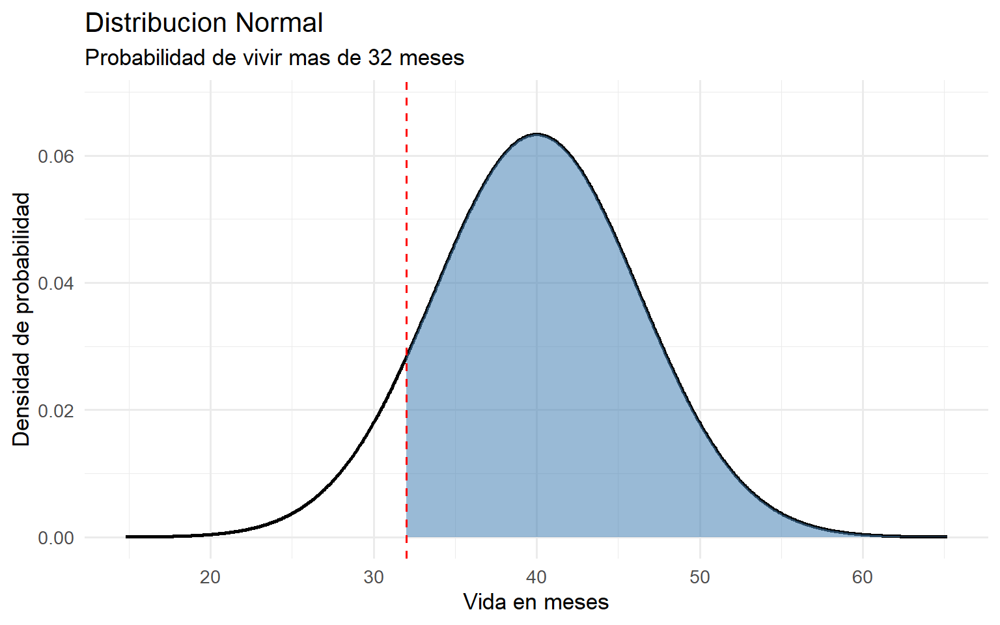
prob_menos_de_28 <- pnorm(28, mean = media, sd = desviacion_estandar)
cat("b)", round(prob_menos_de_28, 4), "\n")b) 0.0284 La probabilidad de que un ratón viva menos de 28 meses es 0.0284, es decir, 2.84%.
grafica_normal(
media = media,
desviacion = desviacion_estandar,
inferior = -Inf,
superior = 28,
color = "orange",
subtitulo = "Probabilidad de vivir menos de 28 meses",
eje_x = "Vida en meses"
)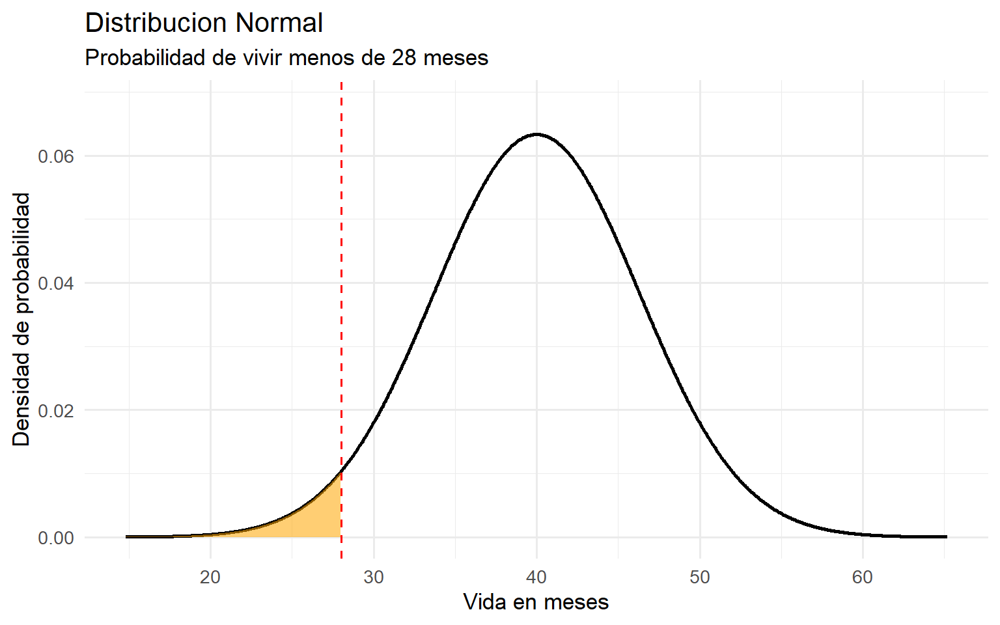
prob_37_49 <- pnorm(49, mean = media, sd = desviacion_estandar) -
pnorm(37, mean = media, sd = desviacion_estandar)
cat("c)", round(prob_37_49, 4), "\n")c) 0.6065 La probabilidad de que un ratón viva entre 37 y 49 meses es 0.6065, es decir, 60.65%.
grafica_normal(
media = media,
desviacion = desviacion_estandar,
inferior = 37,
superior = 49,
color = "purple",
subtitulo = "Probabilidad de vivir entre 37 y 49 meses",
eje_x = "Vida en meses"
)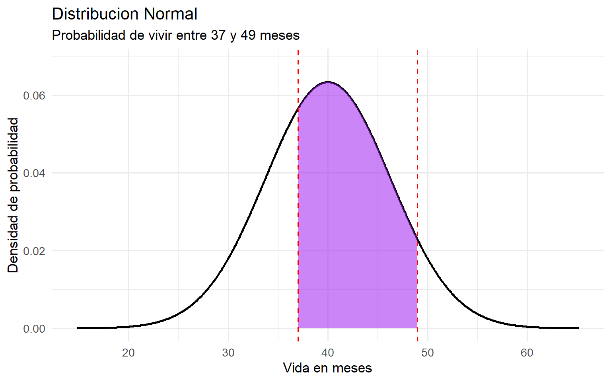
Una máquina expendedora de bebidas gaseosas se regula para que sirva un promedio de 200 mililitros por vaso. Si la cantidad de bebida se distribuye normalmente con una desviación estándar igual a 15 mililitros:
¿Qué fracción de los vasos contendrá más de 224 mililitros?
¿Cuál es la probabilidad de que un vaso contenga entre 191 y 209 mililitros?
¿Cuántos vasos probablemente se derramarán si se utilizan vasos de 230 mililitros para las siguientes 1000 bebidas?
media <- 200
desviacion_estandar <- 15prob_a <- 1 - pnorm(224, mean = media, sd = desviacion_estandar)
cat("a)", round(prob_a, 4), "\n")a) 0.0548 La fracción esperada de vasos con más de 224 ml es 0.0548, equivalente a 5.48%.
grafica_normal(
media = media,
desviacion = desviacion_estandar,
inferior = 224,
superior = Inf,
color = "coral",
titulo = "Probabilidad de que un vaso contenga mas de 224 ml",
eje_x = "Cantidad de bebida (ml)"
)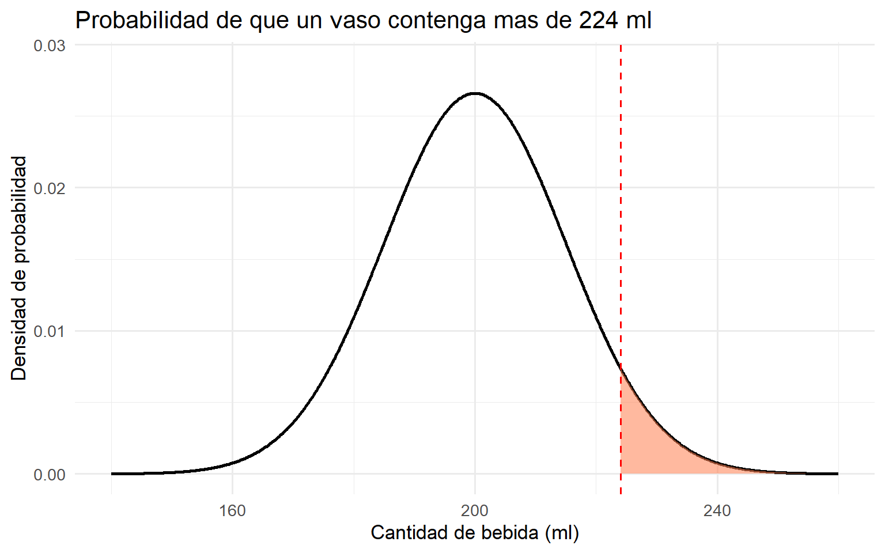
prob_b <- pnorm(209, mean = media, sd = desviacion_estandar) -
pnorm(191, mean = media, sd = desviacion_estandar)
cat("b)", round(prob_b, 4), "\n")b) 0.4515 La probabilidad de que un vaso contenga entre 191 ml y 209 ml es 0.4515, es decir, 45.15%.
grafica_normal(
media = media,
desviacion = desviacion_estandar,
inferior = 191,
superior = 209,
color = "darkgreen",
titulo = "Probabilidad de un vaso entre 191 ml y 209 ml",
eje_x = "Cantidad de bebida (ml)"
)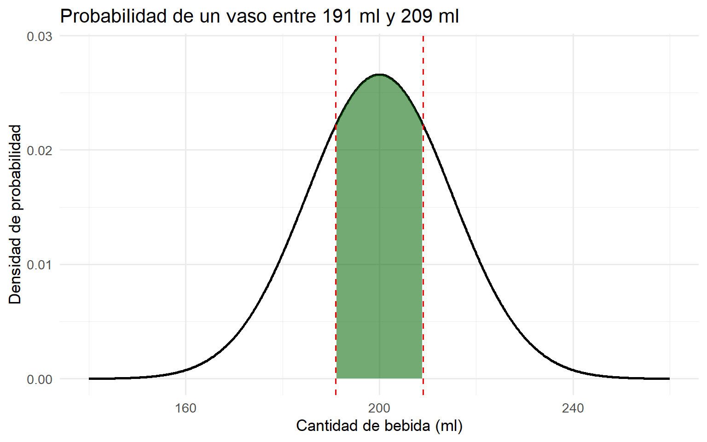
total_vasos <- 1000
prob_derramarse <- 1 - pnorm(230, mean = media, sd = desviacion_estandar)
vasos_derramados <- prob_derramarse * total_vasos
cat("c)", round(vasos_derramados), "vasos\n")c) 23 vasosEn 1000 bebidas se esperaría que se derramaran aproximadamente 23 vasos.
grafica_normal(
media = media,
desviacion = desviacion_estandar,
inferior = 230,
superior = Inf,
color = "purple",
titulo = "Probabilidad de que un vaso se derrame",
eje_x = "Cantidad de bebida (ml)"
)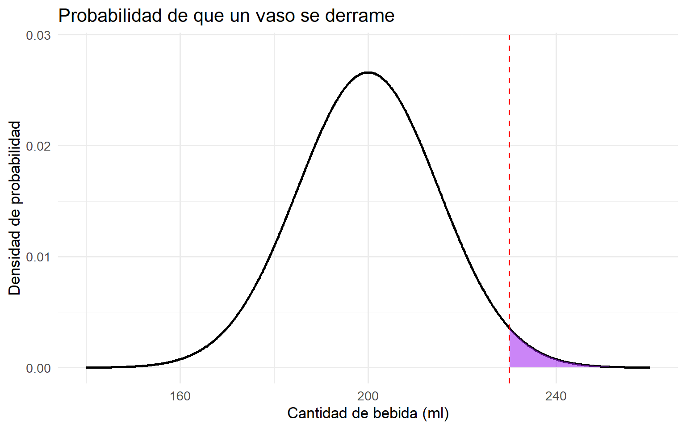
Un abogado viaja todos los días de su casa en los suburbios a su oficina en el centro de la ciudad. El tiempo promedio para un viaje solo de ida es 24 minutos, con una desviación estándar de 3.8 minutos. Suponga que la distribución de los tiempos de viaje está distribuida normalmente.
¿Cuál es la probabilidad de que un viaje tome al menos 1/2 hora?
Si la oficina abre a las 9:00 a. m. y él sale diario de su casa a las 8:45 a. m., ¿qué porcentaje de las veces llegará tarde al trabajo?
Si sale de su casa a las 8:35 a. m. y el café se sirve en la oficina de 8:50 a. m. a 9:00 a. m., ¿cuál es la probabilidad de que se pierda el café?
Encuentre la longitud de tiempo por arriba de la cual encontramos el 15% de los viajes más lentos.
Encuentre la probabilidad de que 2 de los siguientes 3 viajes tomen al menos 1/2 hora.
media <- 24
desviacion <- 3.8prob_viaje_30 <- 1 - pnorm(30, mean = media, sd = desviacion)
cat("a)", round(prob_viaje_30, 4), "\n")a) 0.0572 La probabilidad de que un viaje tome al menos 30 minutos es 0.0572, equivalente a 5.72%.
grafica_normal(
media = media,
desviacion = desviacion,
inferior = 30,
superior = Inf,
color = "coral",
eje_x = "Tiempo de viaje (minutos)"
)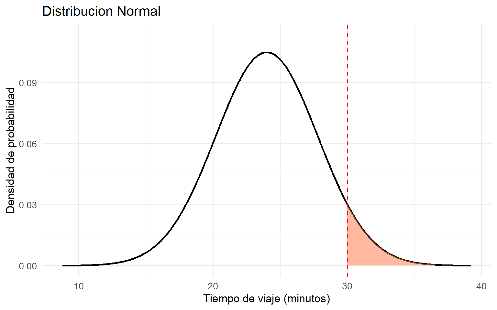
Si sale a las 8:45 a. m. y debe llegar antes de las 9:00 a. m., llega tarde cuando el viaje tarda más de 15 minutos.
prob_llegar_tarde <- 1 - pnorm(15, mean = media, sd = desviacion)
cat("b)", round(100 * prob_llegar_tarde, 2), "%\n")b) 99.11 %El porcentaje de veces en que llegaría tarde es aproximadamente 99.11%.
grafica_normal(
media = media,
desviacion = desviacion,
inferior = 15,
superior = Inf,
color = "#3de3c2",
eje_x = "Tiempo de viaje (minutos)"
)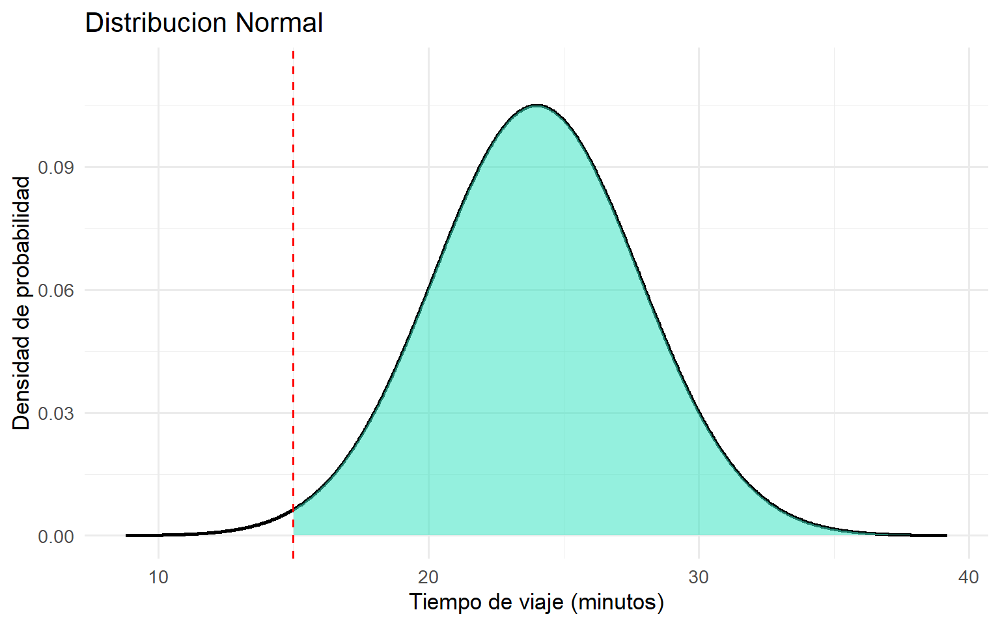
Si sale a las 8:35 a. m. y el café se sirve de 8:50 a. m. a 9:00 a. m., se pierde el café si llega antes de 15 minutos o después de 25 minutos.
prob_c_antes <- pnorm(15, mean = media, sd = desviacion)
prob_c_despues <- 1 - pnorm(25, mean = media, sd = desviacion)
prob_perder_cafe <- prob_c_antes + prob_c_despues
cat("c)", round(prob_perder_cafe, 4), "\n")c) 0.4051 La probabilidad de que se pierda el café es 0.4051, equivalente a 40.51%.
rango <- c(media - 3 * desviacion, media + 3 * desviacion)
x <- seq(rango[1], rango[2], length.out = 900)
datos_cafe <- data.frame(x = x, y = dnorm(x, mean = media, sd = desviacion))
sombra_cafe <- subset(datos_cafe, x <= 15 | x >= 25)
ggplot(datos_cafe, aes(x, y)) +
geom_line(color = "black", size = 0.9) +
geom_area(data = sombra_cafe, aes(x, y), fill = "gray55", alpha = 0.6) +
geom_vline(xintercept = c(15, 25), linetype = "dashed", color = "red") +
labs(
title = "Distribucion Normal",
subtitle = "Probabilidad de perder el cafe",
x = "Tiempo de viaje (minutos)",
y = "Densidad de probabilidad"
) +
theme_minimal()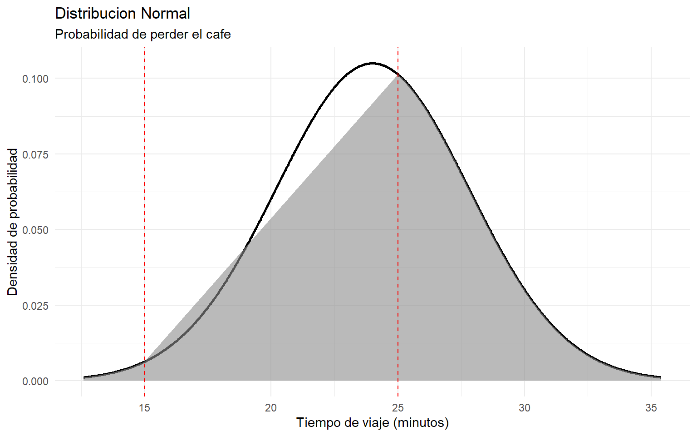
valor_15_lentos <- qnorm(0.85, mean = media, sd = desviacion)
cat("d)", round(valor_15_lentos, 2), "minutos\n")d) 27.94 minutosEl 15% de los viajes más lentos queda por encima de 27.94 minutos.
grafica_normal(
media = media,
desviacion = desviacion,
inferior = valor_15_lentos,
superior = Inf,
color = "#11de07",
subtitulo = "Viajes mas lentos: 15% superior",
eje_x = "Tiempo de viaje (minutos)"
)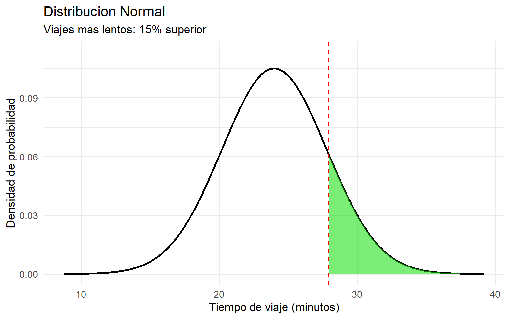
El evento “viaje de al menos 30 minutos” tiene probabilidad 0.0572. Para tres viajes, se usa una distribución binomial.
n_viajes <- 3
x_exitos <- 2
prob_dos_de_tres <- dbinom(x_exitos, size = n_viajes, prob = prob_viaje_30)
cat("e)", round(prob_dos_de_tres, 4), "\n")e) 0.0092 La probabilidad de que exactamente 2 de los siguientes 3 viajes tomen al menos media hora es 0.0092, equivalente a 0.92%.
exitos <- 0:n_viajes
probabilidades <- dbinom(exitos, size = n_viajes, prob = prob_viaje_30)
df_binomial <- data.frame(num_exitos = factor(exitos), prob = probabilidades)
ggplot(df_binomial, aes(x = num_exitos, y = prob)) +
geom_col(fill = "skyblue") +
geom_text(aes(label = round(prob, 4)), vjust = -0.45) +
labs(
title = "Distribucion binomial de viajes que tardan al menos 30 minutos",
x = "Numero de viajes",
y = "Probabilidad"
) +
theme_minimal()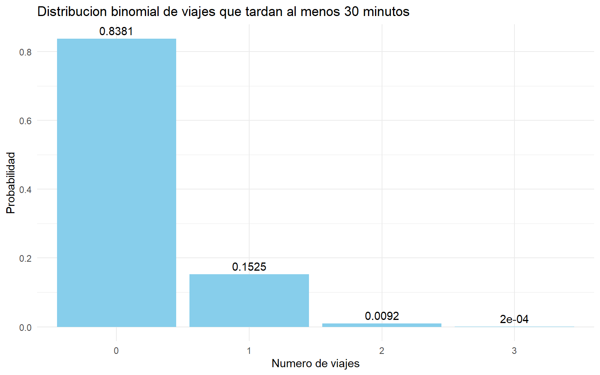
La vida promedio de cierto tipo de motor pequeño es de 10 años con una desviación estándar de 2 años. El fabricante reemplaza gratis todos los motores que fallen dentro del periodo de garantía. Si él está dispuesto a reemplazar solo 3% de los motores que fallan, ¿cuánto tiempo de garantía debería ofrecer? Suponga que la duración de un motor sigue una distribución normal.
media <- 10
desviacion <- 2
probabilidad_fallo <- 0.03
tiempo_garantia <- qnorm(probabilidad_fallo, mean = media, sd = desviacion)
cat("El fabricante debería ofrecer una garantía de:", round(tiempo_garantia, 2), "años\n")El fabricante deber<U+00ED>a ofrecer una garant<U+00ED>a de: 6.24 a<U+00F1>osLa garantía debería estar cerca de 6.24 años.
grafica_normal(
media = media,
desviacion = desviacion,
inferior = -Inf,
superior = tiempo_garantia,
color = "purple",
titulo = "Periodo de garantia de los motores",
subtitulo = "El 3% fallara antes del periodo de garantia",
eje_x = "Vida util del motor (anos)"
)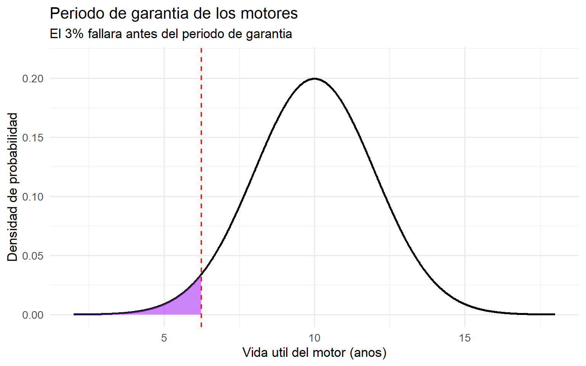
Una compañía paga a sus empleados un salario promedio de $15.90 por hora con una desviación estándar de $1.50. Si los salarios se distribuyen aproximadamente de forma normal y se pagan al centavo más cercano:
¿Qué porcentaje de los trabajadores reciben salarios entre $13.75 y $16.22 inclusive por hora?
¿El 5% más alto de los salarios por hora de los empleados es mayor a qué cantidad?
Como se pagan al centavo más cercano, para el inciso a se aplica corrección de continuidad.
media <- 15.90
desviacion <- 1.50
limite_inferior <- 13.75 - 0.005
limite_superior <- 16.22 + 0.005prob_salarios <- pnorm(limite_superior, mean = media, sd = desviacion) -
pnorm(limite_inferior, mean = media, sd = desviacion)
porcentaje_salarios <- 100 * prob_salarios
cat("a)", round(porcentaje_salarios, 2), "%\n")a) 51.04 %El porcentaje de trabajadores con salarios entre 13.75 y 16.22 dólares es 51.04%.
grafica_normal(
media = media,
desviacion = desviacion,
inferior = limite_inferior,
superior = limite_superior,
color = "darkgreen",
titulo = "Porcentaje de salarios entre $13.75 y $16.22",
eje_x = "Salario por hora ($)"
)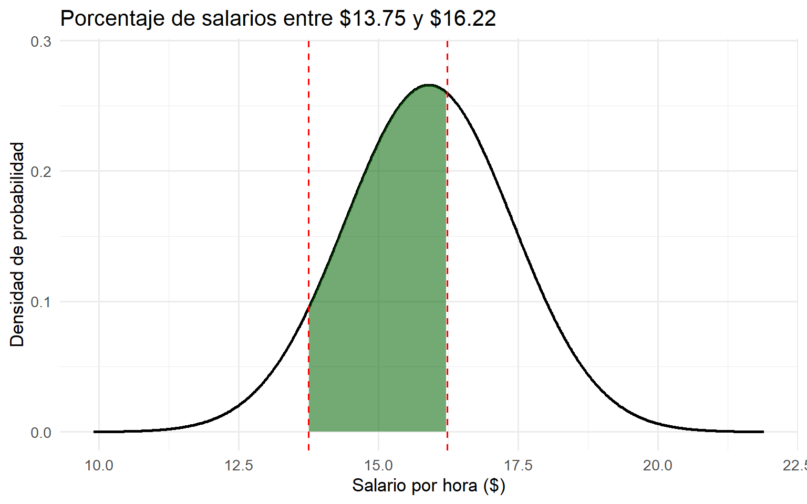
valor_salario_5 <- qnorm(0.95, mean = media, sd = desviacion)
cat("b)", round(valor_salario_5, 2), "$\n")b) 18.37 $El 5% más alto de salarios supera aproximadamente $18.37.
grafica_normal(
media = media,
desviacion = desviacion,
inferior = valor_salario_5,
superior = Inf,
color = "purple",
titulo = "El 5% de salarios mas altos",
eje_x = "Salario por hora ($)"
)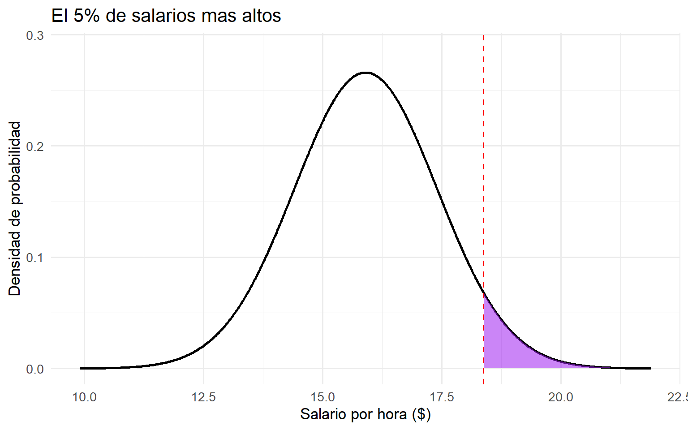
La distribución ji-cuadrado \(\chi^2\) es una distribución de probabilidad continua definida para valores no negativos. Surge de la suma de los cuadrados de variables normales estándar independientes y depende de un parámetro llamado grados de libertad. Su media es igual a los grados de libertad, su varianza es el doble de los grados de libertad y su forma varía según dicho parámetro: es muy asimétrica para valores pequeños y se aproxima a una normal al crecer.
Esta distribución es fundamental en estadística porque se utiliza en pruebas de hipótesis, como bondad de ajuste e independencia en tablas de contingencia, en la construcción de intervalos de confianza para varianzas y en la base de otras distribuciones como la t de Student y la F de Fisher. En términos intuitivos, mide la dispersión total al sumar cuadrados de desviaciones de normales, por lo que resulta clave para analizar varianzas y asociaciones entre variables.
Parámetros y características
A diferencia de la distribución normal, la distribución ji-cuadrado no está definida por una media y una desviación estándar, sino por un único parámetro:
Grados de libertad \((v)\): determina la forma de la distribución. A medida que los grados de libertad aumentan, la forma se vuelve más simétrica y se aproxima a una distribución normal.
Valores no negativos: la variable ji-cuadrado solo puede tomar valores positivos, ya que se calcula a partir de una suma de cuadrados. Por lo tanto, su curva comienza en cero y se extiende hacia la derecha.
Asimétrica a la derecha: presenta una cola larga hacia la derecha, especialmente con pocos grados de libertad.
Media y varianza: la media de la distribución es \(\mu = v\) y la varianza es \(\sigma^2 = 2v\).
Dominio: \(X \ge 0\).
Usos principales en estadística
La distribución \(\chi^2\) es fundamental en estadística inferencial. Se usa en pruebas de bondad de ajuste para verificar si los datos observados se ajustan a una distribución teórica, en pruebas de independencia para evaluar si dos variables categóricas son independientes y en intervalos de confianza para la varianza poblacional cuando la población es normal.
La función de densidad puede escribirse como:
\[ f(x;k)=\frac{1}{2^{k/2}\Gamma(k/2)}x^{k/2-1}e^{-x/2}, \quad x>0 \]
Aquí \(\Gamma(\cdot)\) representa la función gamma y \(k\) es el número de grados de libertad.
k_vals <- c(4, 5, 10)
x <- seq(0, 40, length.out = 1000)
datos_chi <- do.call(
rbind,
lapply(k_vals, function(k) {
data.frame(x = x, densidad = dchisq(x, df = k), k = factor(k))
})
)
ggplot(datos_chi, aes(x = x, y = densidad, color = k)) +
geom_line(size = 1.1) +
labs(
title = expression("Familia de curvas " * chi^2),
subtitle = "Densidades para distintos grados de libertad",
x = "x",
y = "Densidad",
color = "Grados de libertad"
) +
theme_minimal(base_size = 13)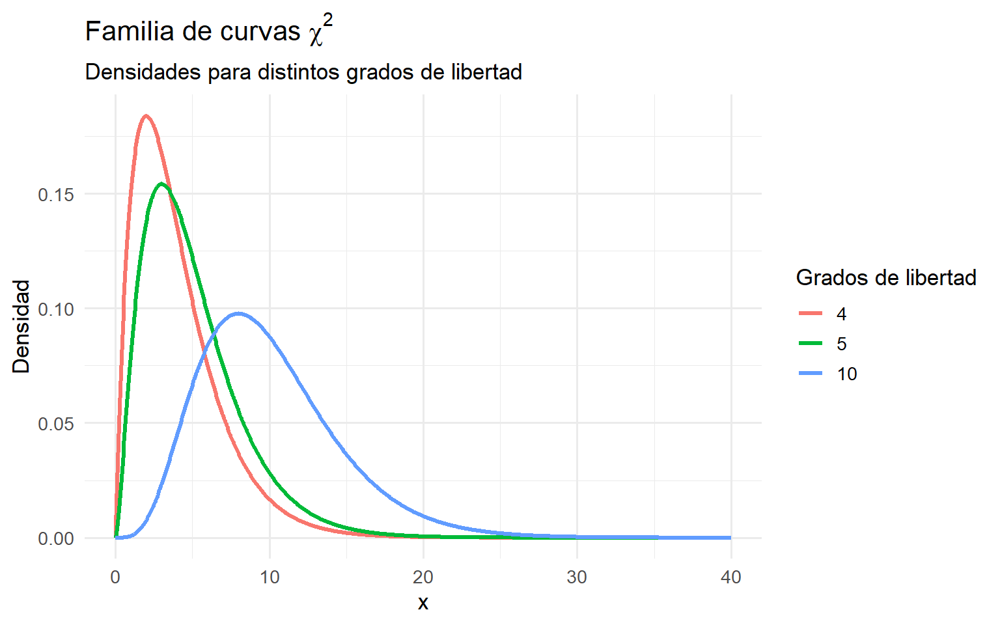
Para una distribución chi-cuadrada encuentre:
\(\chi^2_{0.025}\) cuando \(v = 15\).
\(\chi^2_{0.01}\) cuando \(v = 7\).
\(\chi^2_{0.05}\) cuando \(v = 24\).
chi_839_a <- qchisq(0.025, df = 15, lower.tail = FALSE)
cat("a) El valor crítico es", round(chi_839_a, 4), "\n")a) El valor cr<U+00ED>tico es 27.4884 Para \(v=15\) y cola derecha de \(\alpha=0.025\), el valor crítico es 27.4884.
grafica_chi(15, inferior = chi_839_a, superior = Inf, titulo = "Distribucion ji-cuadrado, inciso a")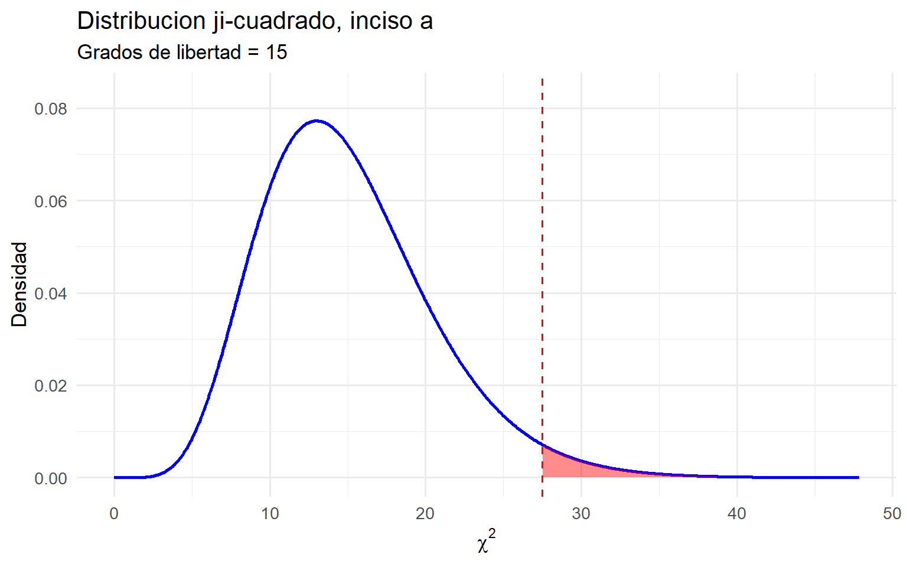
chi_839_b <- qchisq(0.01, df = 7, lower.tail = FALSE)
cat("b) El valor crítico es", round(chi_839_b, 4), "\n")b) El valor cr<U+00ED>tico es 18.4753 Para \(v=7\) y cola derecha de \(\alpha=0.01\), el valor crítico es 18.4753.
grafica_chi(7, inferior = chi_839_b, superior = Inf, titulo = "Distribucion ji-cuadrado, inciso b")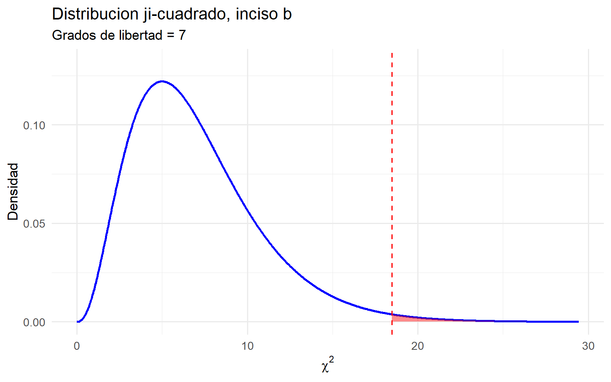
chi_839_c <- qchisq(0.05, df = 24, lower.tail = FALSE)
cat("c) El valor crítico es", round(chi_839_c, 4), "\n")c) El valor cr<U+00ED>tico es 36.415 Para \(v=24\) y cola derecha de \(\alpha=0.05\), el valor crítico es 36.415.
grafica_chi(24, inferior = chi_839_c, superior = Inf, titulo = "Distribucion ji-cuadrado, inciso c")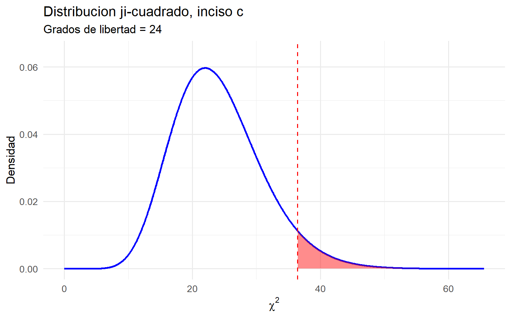
Para una distribución chi-cuadrada encuentre \(\chi^2_\alpha\) tal que:
\(P(X^2 > \chi^2_\alpha) = 0.99\) cuando \(v = 4\).
\(P(X^2 > \chi^2_\alpha) = 0.025\) cuando \(v = 19\).
\(P(37.652 < X^2 < \chi^2_\alpha) = 0.045\) cuando \(v = 25\).
chi_841_a <- qchisq(0.99, df = 4, lower.tail = FALSE)
cat("a) El valor crítico es", round(chi_841_a, 4), "\n")a) El valor cr<U+00ED>tico es 0.2971 Para \(v=4\) y cola derecha de \(0.99\), el valor crítico es 0.2971.
grafica_chi(4, inferior = chi_841_a, superior = Inf, titulo = "Caso a")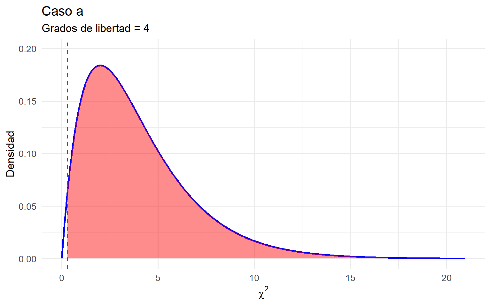
chi_841_b <- qchisq(0.025, df = 19, lower.tail = FALSE)
cat("b) El valor crítico es", round(chi_841_b, 4), "\n")b) El valor cr<U+00ED>tico es 32.8523 Para \(v=19\) y cola derecha de \(0.025\), el valor crítico es 32.8523.
grafica_chi(19, inferior = chi_841_b, superior = Inf, titulo = "Caso b")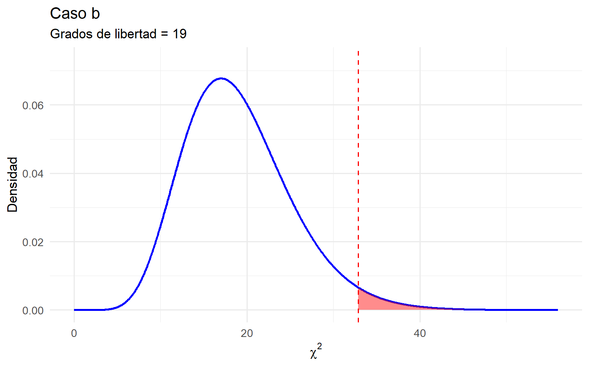
p_base <- pchisq(37.652, df = 25)
p_objetivo <- p_base + 0.045
chi_841_c <- qchisq(p_objetivo, df = 25)
cat("c) El valor crítico es", round(chi_841_c, 4), "\n")c) El valor cr<U+00ED>tico es 46.9239 El valor que deja un área de 0.045 entre 37.652 y el valor crítico buscado es 46.9239.
grafica_chi(25, inferior = 37.652, superior = chi_841_c, titulo = "Caso c")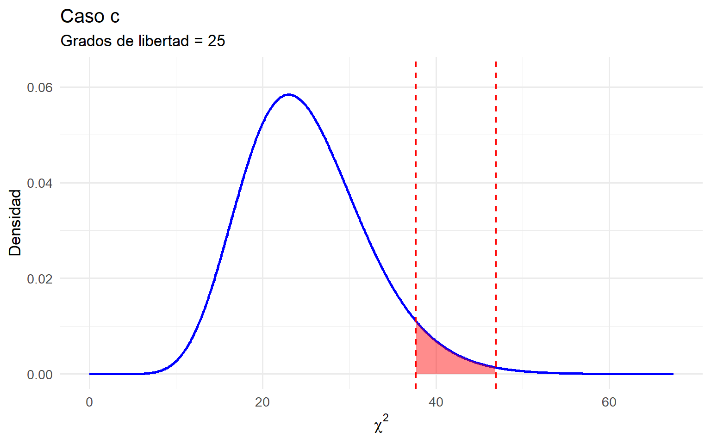
La distribución t de Student es una distribución de probabilidad continua que surge al estimar la media de una población normalmente distribuida cuando el tamaño de la muestra es pequeño y la varianza poblacional es desconocida. Fue introducida en 1908 por William Sealy Gosset bajo el seudónimo de Student.
Su forma es simétrica respecto al cero, similar a la normal estándar, pero con colas más pesadas; por esta razón asigna mayor probabilidad a valores extremos. Depende de los grados de libertad: a mayor número de grados de libertad, la distribución se aproxima cada vez más a la normal estándar \(N(0,1)\).
Principales características
Forma: es simétrica respecto al cero y tiene forma de campana.
Parámetro: depende de los grados de libertad \(v\).
Media: es 0 para \(v > 1\).
Varianza: es \(\frac{v}{v-2}\) para \(v > 2\).
Usos principales
Se usa en pruebas de hipótesis sobre medias, en la construcción de intervalos de confianza para la media y para modelar incertidumbre en muestras pequeñas cuando la desviación estándar poblacional no se conoce.
Si \(Z \sim N(0,1)\) y \(V \sim \chi^2_v\) son independientes, entonces:
\[ T=\frac{Z}{\sqrt{V/v}} \]
sigue una distribución t de Student con \(v\) grados de libertad.
Su función de densidad es:
\[ f(t)= \frac{\Gamma\left(\frac{v+1}{2}\right)} {\sqrt{v\pi}\,\Gamma\left(\frac{v}{2}\right)} \left(1+\frac{t^2}{v}\right)^{-\frac{v+1}{2}}, \quad -\infty<t<\infty \]
dfs <- c(3, 5, 10)
x_range <- seq(-5, 5, by = 0.01)
datos_t <- do.call(
rbind,
lapply(dfs, function(gl) {
data.frame(x = x_range, densidad = dt(x_range, df = gl), gl = factor(gl))
})
)
ggplot(datos_t, aes(x = x, y = densidad, color = gl)) +
geom_line(size = 1) +
labs(
title = "Familia de curvas t-Student",
subtitle = "Diferentes grados de libertad",
x = "x",
y = "Densidad",
color = "df"
) +
theme_minimal(base_size = 12)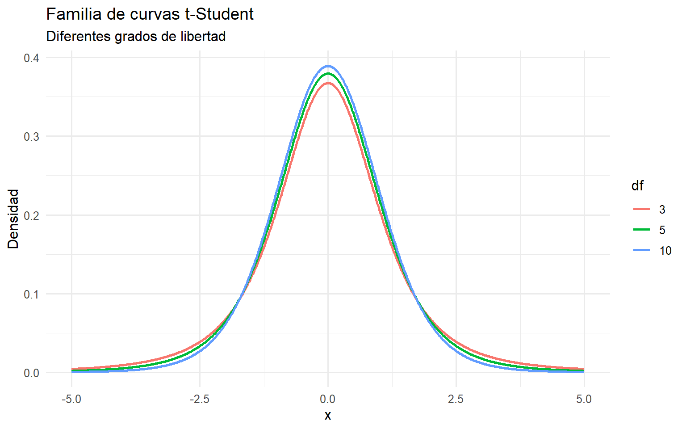
Encuentre las siguientes probabilidades para una variable aleatoria con distribución t de Student:
\(P(T < 2.365)\) cuando \(v = 7\).
\(P(T > 1.318)\) cuando \(v = 24\).
\(P(-1.356 < T < 2.179)\) cuando \(v = 12\).
\(P(T > -2.567)\) cuando \(v = 17\).
t_847_a <- pt(2.365, df = 7)
cat("a)", round(t_847_a, 4), "\n")a) 0.975 La probabilidad \(P(T < 2.365)\) con 7 grados de libertad es 0.975.
grafica_t(7, inferior = -Inf, superior = 2.365, titulo = "a) P(T < 2.365)")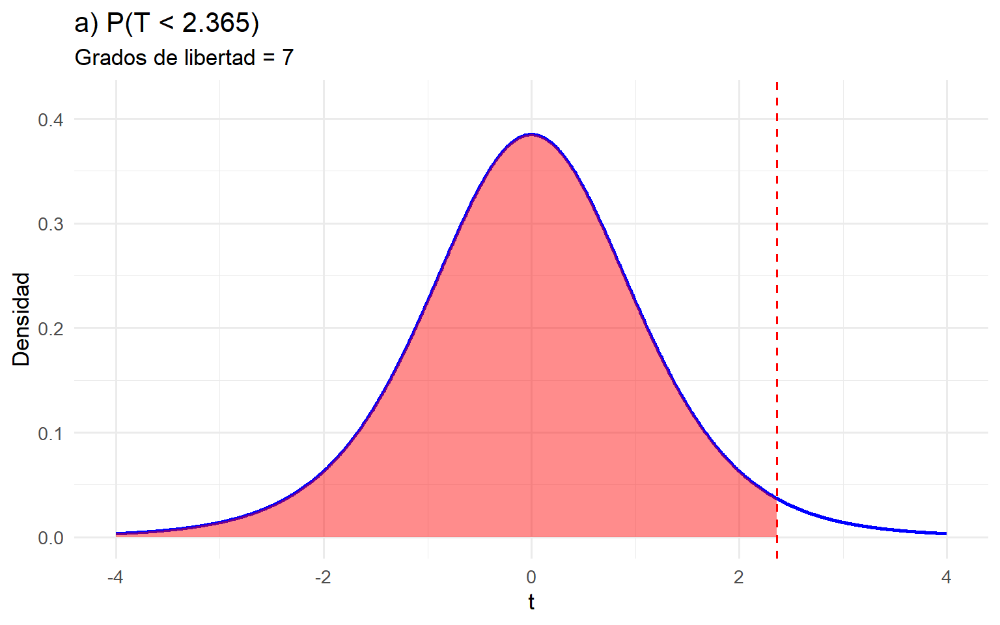
t_847_b <- 1 - pt(1.318, df = 24)
cat("b)", round(t_847_b, 4), "\n")b) 0.1 La probabilidad \(P(T > 1.318)\) con 24 grados de libertad es 0.1.
grafica_t(24, inferior = 1.318, superior = Inf, titulo = "b) P(T > 1.318)")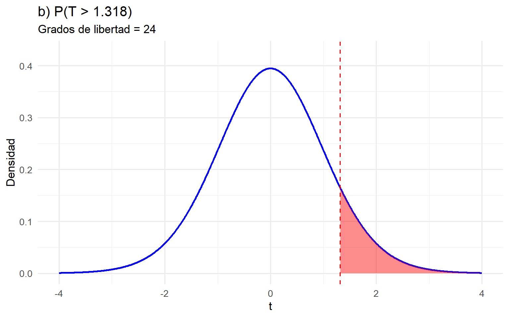
t_847_c <- pt(2.179, df = 12) - pt(-1.356, df = 12)
cat("c)", round(t_847_c, 4), "\n")c) 0.875 La probabilidad \(P(-1.356 < T < 2.179)\) con 12 grados de libertad es 0.875.
grafica_t(12, inferior = -1.356, superior = 2.179, titulo = "c) P(-1.356 < T < 2.179)")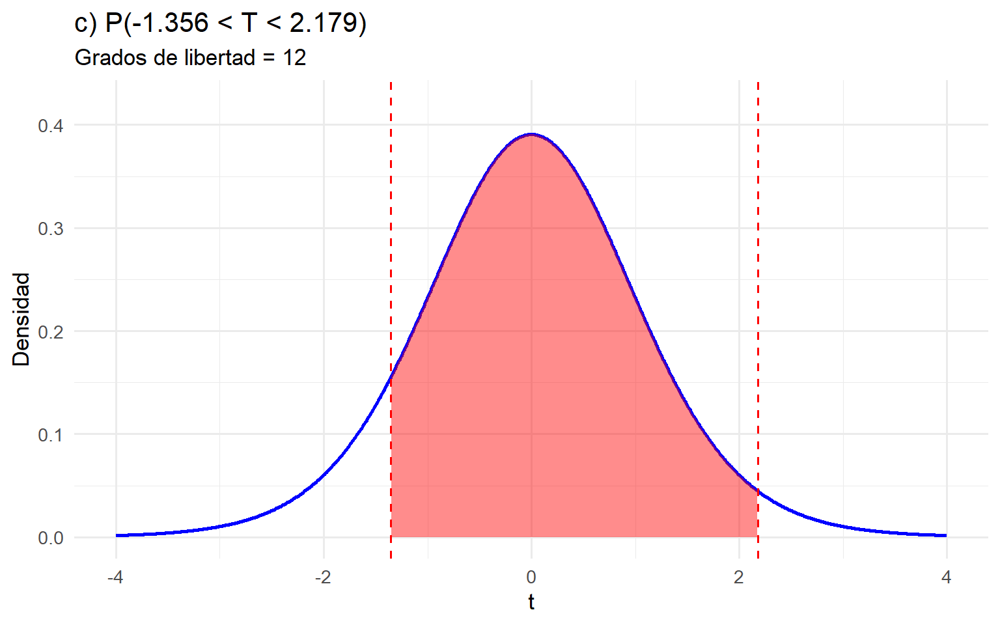
t_847_d <- 1 - pt(-2.567, df = 17)
cat("d)", round(t_847_d, 4), "\n")d) 0.99 La probabilidad \(P(T > -2.567)\) con 17 grados de libertad es 0.99.
grafica_t(17, inferior = -2.567, superior = Inf, titulo = "d) P(T > -2.567)")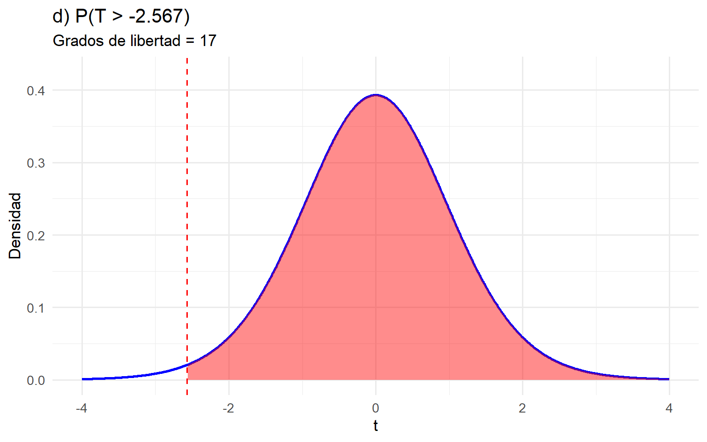
Dada una muestra aleatoria de tamaño 24 de una distribución normal, encuentre \(k\) tal que:
\(P(-2.069 < T < k) = 0.965\).
\(P(k < T < 2.807) = 0.095\).
\(P(-k < T < k) = 0.90\).
Como el tamaño de muestra es 24, se trabajan \(v = 24 - 1 = 23\) grados de libertad.
v <- 24 - 1
k_a <- qt(0.965 + pt(-2.069, df = v), df = v)
cat("a) k =", round(k_a, 4), "\n")a) k = 2.4991 El valor que satisface \(P(-2.069 < T < k)=0.965\) es 2.4991.
grafica_t(v, inferior = -2.069, superior = k_a, color = "skyblue", titulo = "a) P(-2.069 < T < k) = 0.965")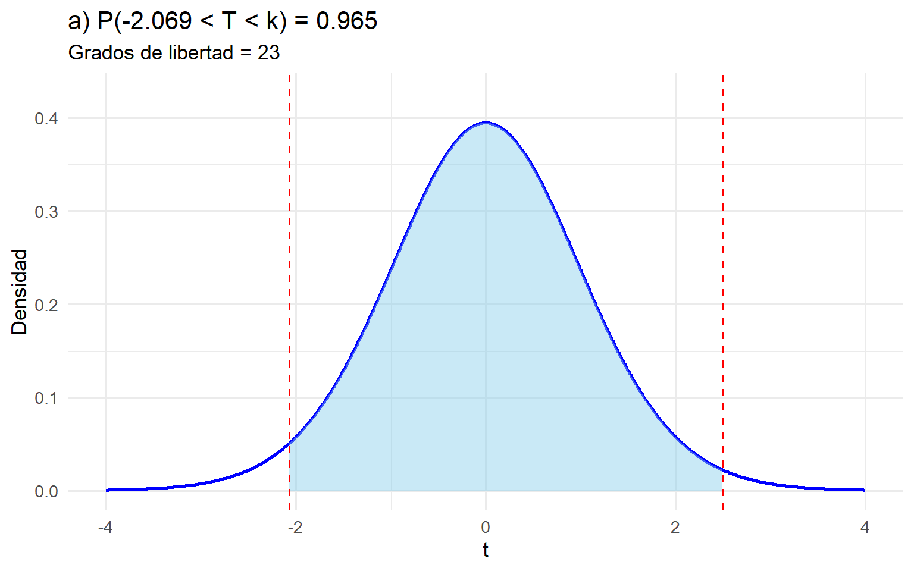
p_2807 <- pt(2.807, df = v)
k_b <- qt(p_2807 - 0.095, df = v)
cat("b) k =", round(k_b, 4), "\n")b) k = 1.3194 El valor que satisface \(P(k < T < 2.807)=0.095\) es 1.3194.
grafica_t(v, inferior = k_b, superior = 2.807, color = "skyblue", titulo = "b) P(k < T < 2.807) = 0.095")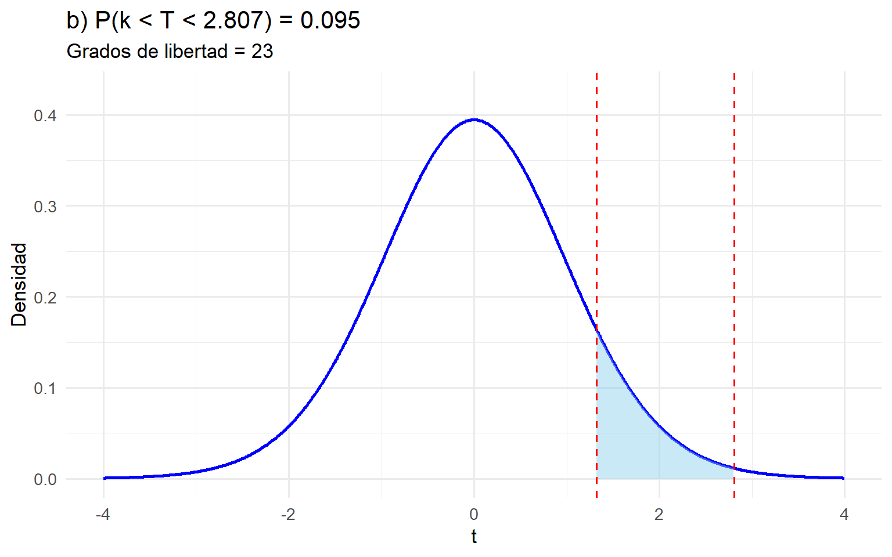
k_c <- qt(0.95, df = v)
cat("c) k =", round(k_c, 4), "\n")c) k = 1.7139 El valor que satisface \(P(-k < T < k)=0.90\) es 1.7139.
grafica_t(v, inferior = -k_c, superior = k_c, color = "skyblue", titulo = "c) P(-k < T < k) = 0.90")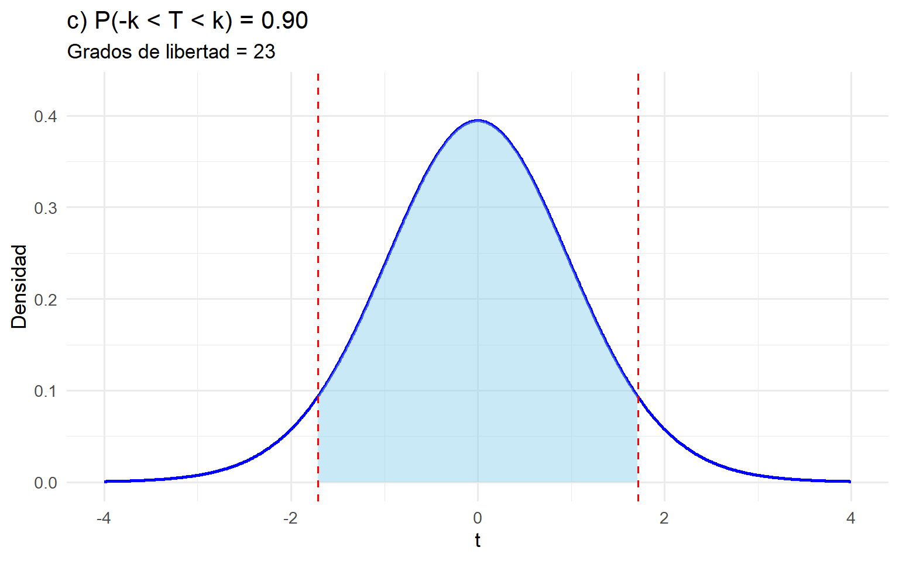
La distribución F, también conocida como F de Fisher-Snedecor, es una distribución de probabilidad continua que surge a partir de la razón entre dos variables aleatorias chi-cuadrado normalizadas por sus grados de libertad.
La distribución F solo toma valores positivos, es asimétrica a la derecha y se concentra cerca de 1 cuando los grados de libertad son grandes. Es especialmente importante en el análisis de varianza, en pruebas de hipótesis sobre varianzas y en regresión lineal, donde la prueba F permite evaluar la significancia global de un modelo.
Propiedades principales
Soporte: \(F > 0\).
Asimetría: la curva de densidad es sesgada a la derecha, especialmente con pocos grados de libertad.
Esperanza matemática: \(E(F)=\frac{v_2}{v_2-2}\) para \(v_2 > 2\).
Varianza: \(\operatorname{Var}(F)=\frac{2v_2^2(v_1+v_2-2)}{v_1(v_2-2)^2(v_2-4)}\) para \(v_2 > 4\).
Usos más comunes
Se utiliza en análisis de varianza para contrastar si varias medias poblacionales son iguales, en pruebas para comparar varianzas de dos poblaciones y en modelos de regresión lineal para evaluar la significancia global.
Si \(X \sim \chi^2_{v_1}\) y \(Y \sim \chi^2_{v_2}\) son independientes:
\[ F=\frac{X/v_1}{Y/v_2} \]
Una forma de escribir su función de densidad es:
\[ f(x;v_1,v_2)= \frac{\Gamma\left(\frac{v_1+v_2}{2}\right)} {\Gamma\left(\frac{v_1}{2}\right)\Gamma\left(\frac{v_2}{2}\right)} \left(\frac{v_1}{v_2}\right)^{v_1/2} x^{v_1/2-1} \left(1+\frac{v_1}{v_2}x\right)^{-\frac{v_1+v_2}{2}}, \quad x>0 \]
x <- seq(0.001, 5, length.out = 500)
combinaciones_f <- list(c(1, 5), c(2, 10), c(5, 10), c(10, 20))
datos_f <- do.call(
rbind,
lapply(combinaciones_f, function(par) {
v1 <- par[1]
v2 <- par[2]
data.frame(
x = x,
densidad = df(x, df1 = v1, df2 = v2),
etiqueta = paste0("v1=", v1, ", v2=", v2)
)
})
)
ggplot(datos_f, aes(x = x, y = densidad, color = etiqueta)) +
geom_line(size = 1) +
coord_cartesian(ylim = c(0, 1.8)) +
labs(
title = "Familia de curvas de la distribucion F",
x = "x",
y = "Densidad",
color = "Grados de libertad"
) +
theme_minimal(base_size = 13)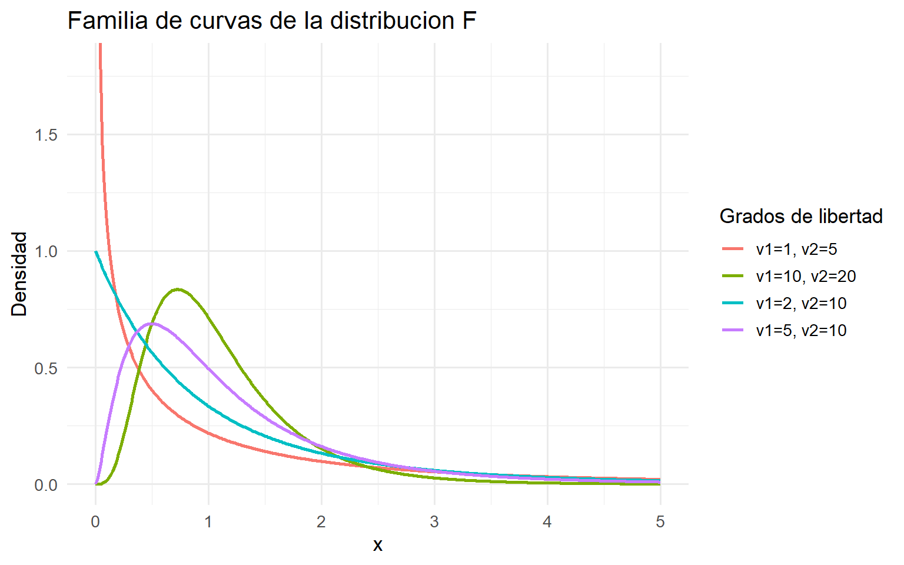
Para una distribución \(F\), encuentre:
\(f_{0.05}\) con \(v_1 = 7\) y \(v_2 = 15\).
\(f_{0.05}\) con \(v_1 = 15\) y \(v_2 = 7\).
\(f_{0.01}\) con \(v_1 = 24\) y \(v_2 = 19\).
\(f_{0.95}\) con \(v_1 = 19\) y \(v_2 = 24\).
\(f_{0.99}\) con \(v_1 = 28\) y \(v_2 = 12\).
En esta solución se usa la misma convención de la página original y de qf() en R: \(f_\alpha\) se interpreta como el valor que deja una probabilidad acumulada \(\alpha\) a la izquierda, es decir, \(P(F \le f_\alpha)=\alpha\).
f_a <- qf(0.05, df1 = 7, df2 = 15)
cat("a) F =", round(f_a, 4), "\n")a) F = 0.2848 El valor crítico F para \(v_1=7\), \(v_2=15\) y probabilidad acumulada 0.05 es 0.2848.
grafica_f(7, 15, inferior = -Inf, superior = f_a, titulo = "Inciso a")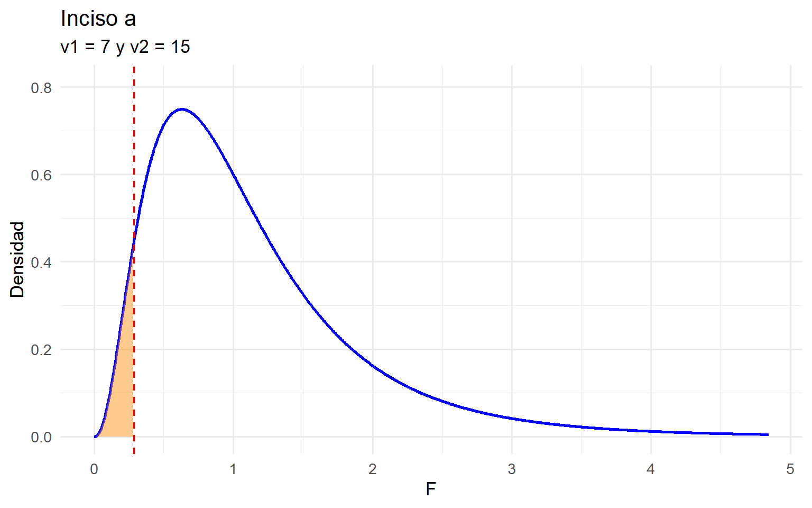
f_b <- qf(0.05, df1 = 15, df2 = 7)
cat("b) F =", round(f_b, 4), "\n")b) F = 0.3695 El valor crítico F para \(v_1=15\), \(v_2=7\) y probabilidad acumulada 0.05 es 0.3695.
grafica_f(15, 7, inferior = -Inf, superior = f_b, titulo = "Inciso b")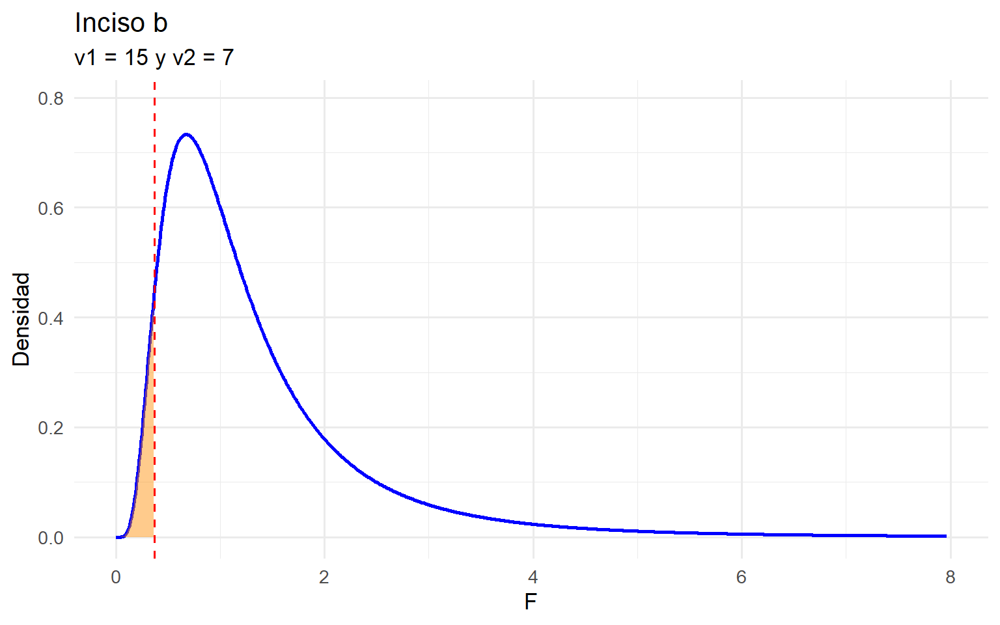
f_c <- qf(0.01, df1 = 24, df2 = 19)
cat("c) F =", round(f_c, 4), "\n")c) F = 0.362 El valor crítico F para \(v_1=24\), \(v_2=19\) y probabilidad acumulada 0.01 es 0.362.
grafica_f(24, 19, inferior = -Inf, superior = f_c, titulo = "Inciso c")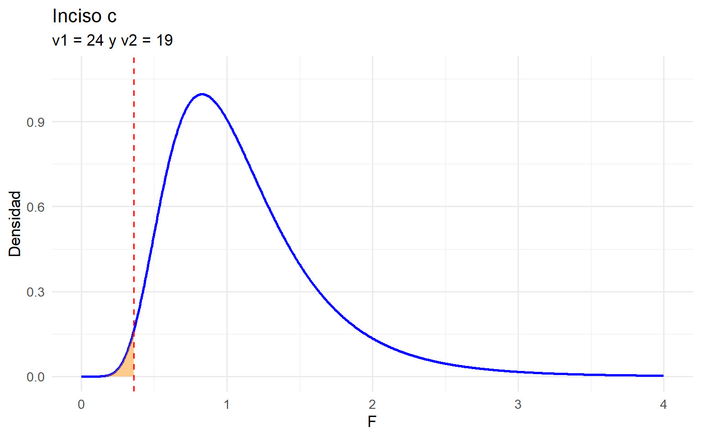
f_d <- qf(0.95, df1 = 19, df2 = 24)
cat("d) F =", round(f_d, 4), "\n")d) F = 2.0399 El valor crítico F para \(v_1=19\), \(v_2=24\) y probabilidad acumulada 0.95 es 2.0399.
grafica_f(19, 24, inferior = -Inf, superior = f_d, titulo = "Inciso d")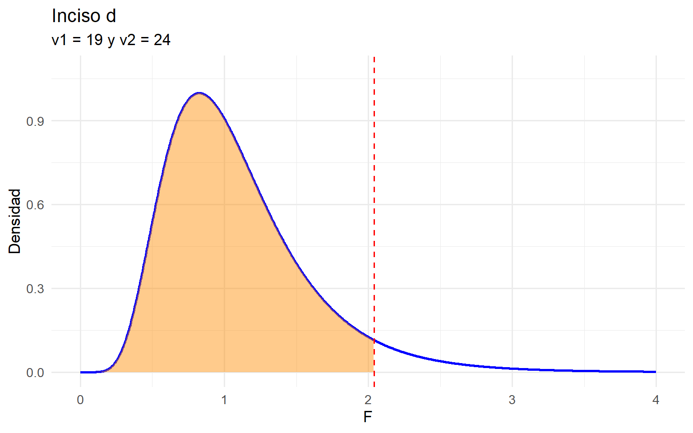
f_e <- qf(0.99, df1 = 28, df2 = 12)
cat("e) F =", round(f_e, 4), "\n")e) F = 3.7237 El valor crítico F para \(v_1=28\), \(v_2=12\) y probabilidad acumulada 0.99 es 3.7237.
grafica_f(28, 12, inferior = -Inf, superior = f_e, titulo = "Inciso e")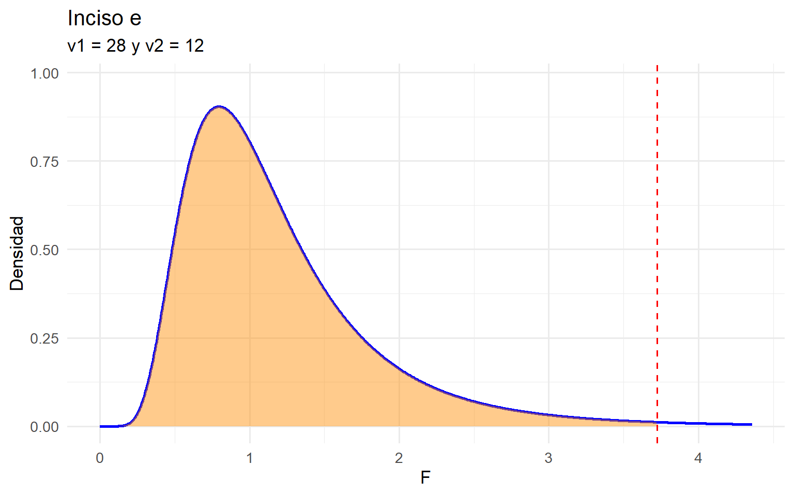
El Teorema del Límite Central (TLC) es uno de los conceptos más importantes en estadística. En términos simples, establece que la distribución de la media de una muestra se aproxima a una distribución normal a medida que el tamaño de la muestra aumenta, sin importar la forma de la distribución original de la población.
Concepto y analogía
Imagina que tienes una población con una distribución extraña, por ejemplo muy sesgada. Si tomas una sola muestra grande de esa población y calculas su media, esa media se comportará de manera más predecible. Si repites este proceso muchas veces, las medias de todas esas muestras formarán un histograma que se parecerá cada vez más a una curva de campana, es decir, a una distribución normal.
Una analogía popular es la de los dados. La distribución de probabilidad de un solo dado es uniforme, porque cada número tiene la misma probabilidad. Sin embargo, si lanzas muchos dados y sumas sus resultados, la distribución de esas sumas se aproxima a una campana, con los resultados centrales siendo mucho más probables que los extremos.
Puntos clave del teorema
Forma de la distribución de muestreo: la distribución de las medias de la muestra se vuelve aproximadamente normal, aunque la población original sea normal, sesgada, uniforme o tenga otra forma.
Tamaño de la muestra: la aproximación a la normalidad es más precisa a medida que el tamaño de la muestra aumenta. Generalmente, una muestra de \(n \ge 30\) se considera suficiente para que la aproximación sea razonable.
Relación con la media de la población: la media de la distribución de muestreo de las medias es igual a la media de la población.
Relación con la desviación estándar de la población: la desviación estándar de la distribución de muestreo de las medias, llamada error estándar, es igual a la desviación estándar de la población dividida por la raíz cuadrada del tamaño de la muestra.
Importancia
El Teorema del Límite Central permite utilizar la distribución normal para hacer inferencias sobre la media de la población, incluso cuando no se conoce la distribución de la población original. Esto es la base para muchas pruebas estadísticas, intervalos de confianza y procedimientos de inferencia.
Si la población tiene media \(\mu\) y desviación estándar \(\sigma\), entonces la media muestral cumple aproximadamente:
\[ \mu_{\bar{x}}=\mu, \qquad \sigma_{\bar{x}}=\frac{\sigma}{\sqrt{n}} \]
Por tanto, cuando \(n\) es suficientemente grande:
\[ Z=\frac{\bar{X}-\mu}{\sigma/\sqrt{n}}\approx N(0,1) \]
k <- 10
p <- 0.35
poblacion_binomial <- data.frame(
x = 0:k,
probabilidad = dbinom(0:k, size = k, prob = p)
)
ggplot(poblacion_binomial, aes(x = x, y = probabilidad)) +
geom_col(fill = "#91cc02", alpha = 0.85) +
labs(
title = "Distribucion Binomial Original",
x = "Numero de exitos",
y = "Probabilidad"
) +
theme_minimal()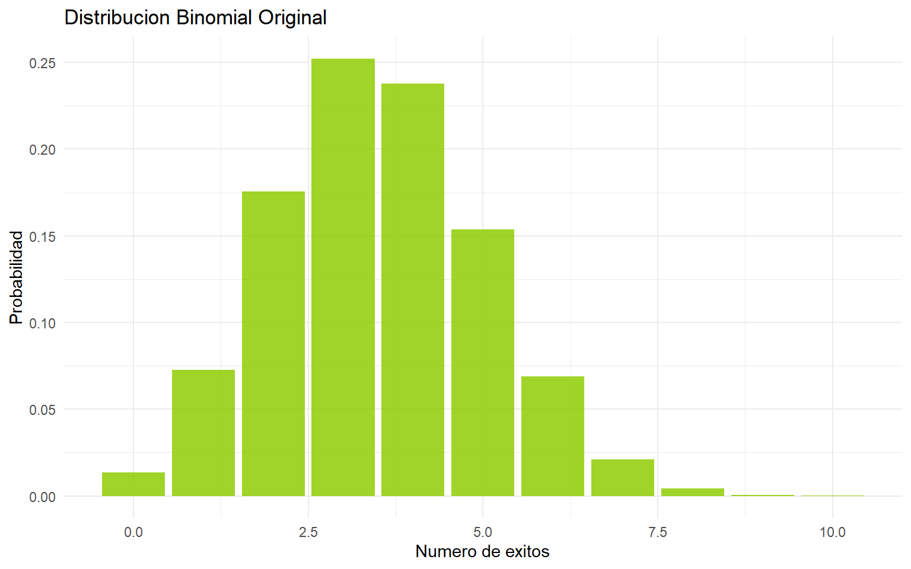
set.seed(123)
n <- 30
repeticiones <- 10000
medias_binomiales <- replicate(repeticiones, {
muestra <- rbinom(n, size = k, prob = p)
mean(muestra)
})
df_medias_binomiales <- data.frame(media = medias_binomiales)
ggplot(df_medias_binomiales, aes(x = media)) +
geom_histogram(aes(y = after_stat(density)), bins = 30, fill = "#91cc02", color = "white", alpha = 0.85) +
stat_function(
fun = dnorm,
args = list(mean = mean(df_medias_binomiales$media), sd = sd(df_medias_binomiales$media)),
color = "darkblue",
size = 1.2,
linetype = "dashed"
) +
labs(
title = "Distribucion de las medias muestrales",
x = "Media de la muestra",
y = "Densidad"
) +
theme_minimal()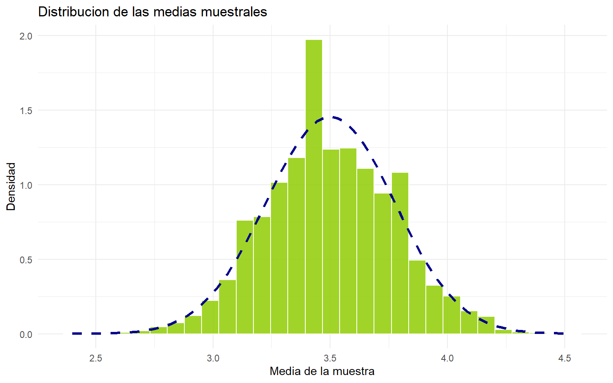
set.seed(123)
lambda <- 3.5
poblacion_poisson <- data.frame(
x = 0:15,
probabilidad = dpois(0:15, lambda = lambda)
)
ggplot(poblacion_poisson, aes(x = x, y = probabilidad)) +
geom_col(fill = "#fd1ebc", width = 0.55) +
labs(
title = "Distribucion de Poisson Original",
x = "Numero de eventos",
y = "Probabilidad"
) +
theme_minimal()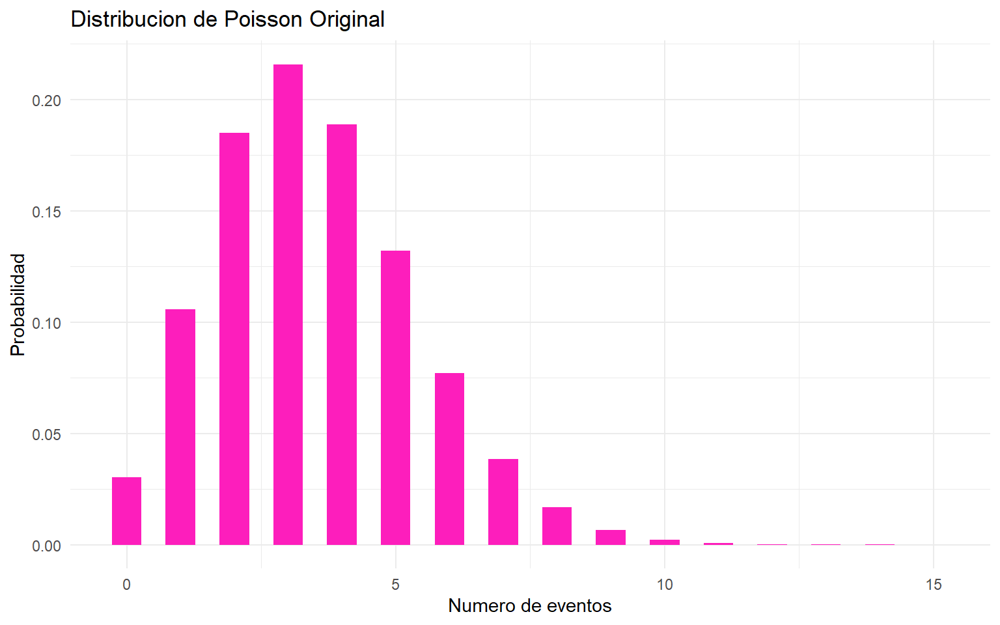
n <- 30
repeticiones <- 10000
medias_poisson <- replicate(repeticiones, {
muestra <- rpois(n, lambda = lambda)
mean(muestra)
})
df_medias_poisson <- data.frame(media = medias_poisson)
ggplot(df_medias_poisson, aes(x = media)) +
geom_histogram(aes(y = after_stat(density)), bins = 30, fill = "#fd1ebc", color = "white", alpha = 0.85) +
stat_function(
fun = dnorm,
args = list(mean = mean(df_medias_poisson$media), sd = sd(df_medias_poisson$media)),
color = "darkblue",
size = 1.2,
linetype = "dashed"
) +
labs(
title = "Distribucion de las medias muestrales",
x = "Media muestral",
y = "Densidad"
) +
theme_minimal()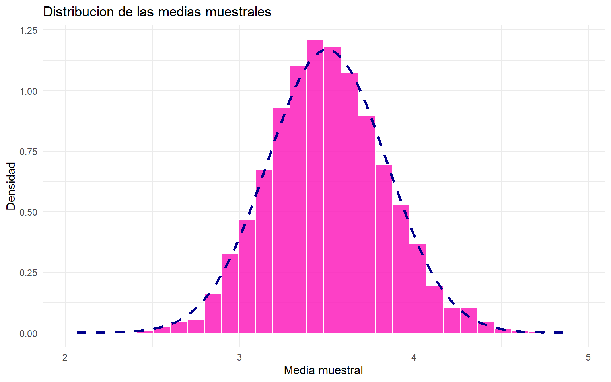
N <- 1000
K <- 350
n <- 30
poblacion_hiper <- data.frame(
exitos = 0:n,
probabilidad = dhyper(x = 0:n, m = K, n = N - K, k = n)
)
ggplot(poblacion_hiper, aes(x = exitos, y = probabilidad)) +
geom_col(fill = "#8d8dad", width = 0.55) +
labs(
title = "Distribucion Hipergeometrica Original",
x = "Numero de exitos en la muestra",
y = "Probabilidad"
) +
theme_minimal()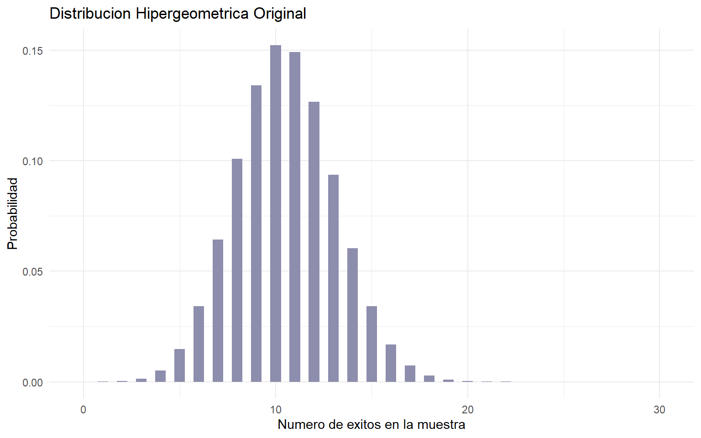
set.seed(123)
repeticiones <- 10000
medias_hiper <- replicate(repeticiones, {
exitos_muestra <- rhyper(nn = 1, m = K, n = N - K, k = n)
exitos_muestra / n
})
df_medias_hiper <- data.frame(media = medias_hiper)
ggplot(df_medias_hiper, aes(x = media)) +
geom_histogram(aes(y = after_stat(density)), bins = 30, fill = "#8d8dad", color = "white", alpha = 0.85) +
stat_function(
fun = dnorm,
args = list(mean = mean(df_medias_hiper$media), sd = sd(df_medias_hiper$media)),
color = "darkblue",
size = 1.2,
linetype = "dashed"
) +
labs(
title = "Distribucion de las medias muestrales",
x = "Media de la muestra",
y = "Densidad"
) +
theme_minimal()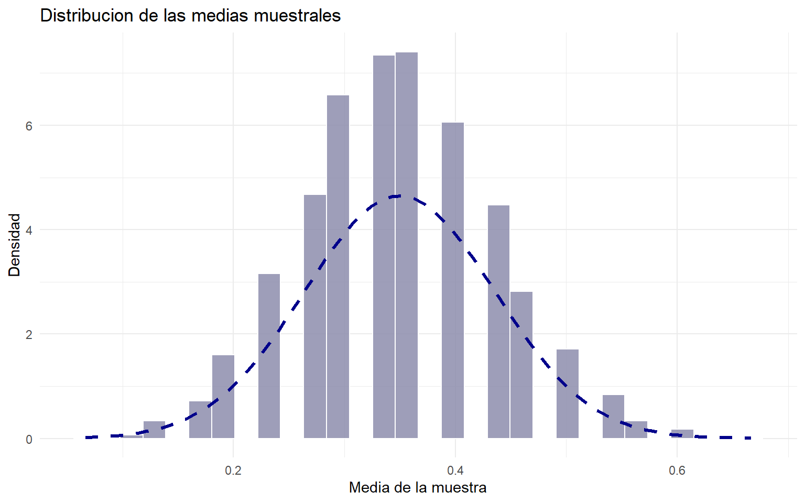
Esta aplicación permite simular, comparar y visualizar en un solo lugar los modelos continuos trabajados en el documento: normal, ji-cuadrado, t de Student, F de Fisher y Teorema del Límite Central.
#| '!! shinylive warning !!': |
#| shinylive does not work in self-contained HTML documents.
#| Please set `embed-resources: false` in your metadata.
#| standalone: true
#| viewerHeight: 760
library(shiny)
ui <- fluidPage(
tags$div(
class = "shiny-lab",
fluidRow(
column(
width = 4,
wellPanel(
selectInput(
"modelo_app",
"Modelo a simular:",
choices = c(
"Distribucion Normal" = "normal",
"Distribucion Ji-cuadrado" = "chi",
"Distribucion t de Student" = "t",
"Distribucion F de Fisher" = "f",
"Teorema del Limite Central" = "tlc"
),
selected = "normal"
),
uiOutput("controles_modelo"),
actionButton("simular_app", "Simular de nuevo", class = "btn-primary")
)
),
column(
width = 8,
tabsetPanel(
type = "tabs",
tabPanel("Grafica", plotOutput("grafico_modelo", height = "470px")),
tabPanel(
"Resumen",
tableOutput("tabla_modelo"),
uiOutput("interpretacion_modelo")
)
)
)
)
)
)
server <- function(input, output, session) {
semilla_app <- reactiveVal(123)
observeEvent(input$simular_app, {
semilla_app(sample.int(.Machine$integer.max, 1))
}, ignoreInit = TRUE)
valor_app <- function(x, defecto) {
if (is.null(x) || length(x) == 0 || any(is.na(x))) {
defecto
} else {
x
}
}
clamp_app <- function(x, minimo, maximo) {
min(max(x, minimo), maximo)
}
output$controles_modelo <- renderUI({
modelo <- valor_app(input$modelo_app, "normal")
if (modelo == "tlc") {
tagList(
selectInput(
"tlc_dist_app",
"Distribucion base:",
choices = c(
"Normal" = "normal",
"Uniforme" = "uniforme",
"Exponencial" = "exponencial",
"Binomial" = "binomial",
"Poisson" = "poisson",
"Hipergeometrica" = "hiper"
),
selected = "exponencial"
),
conditionalPanel(
"input.tlc_dist_app == 'normal'",
numericInput("tlc_mu_app", "Media:", value = 10),
numericInput("tlc_sigma_app", "Desviacion estandar:", value = 2, min = 0.01)
),
conditionalPanel(
"input.tlc_dist_app == 'uniforme'",
numericInput("tlc_a_app", "Minimo:", value = 0),
numericInput("tlc_b_app", "Maximo:", value = 10)
),
conditionalPanel(
"input.tlc_dist_app == 'exponencial'",
numericInput("tlc_lambda_exp_app", "Lambda:", value = 1.5, min = 0.01)
),
conditionalPanel(
"input.tlc_dist_app == 'binomial'",
numericInput("tlc_size_app", "Ensayos:", value = 10, min = 1, step = 1),
sliderInput("tlc_p_app", "Probabilidad de exito:", min = 0.01, max = 0.99, value = 0.35, step = 0.01)
),
conditionalPanel(
"input.tlc_dist_app == 'poisson'",
numericInput("tlc_lambda_pois_app", "Lambda:", value = 3.5, min = 0.01)
),
conditionalPanel(
"input.tlc_dist_app == 'hiper'",
numericInput("tlc_N_app", "Tamano de poblacion:", value = 1000, min = 10, step = 1),
numericInput("tlc_K_app", "Exitos en la poblacion:", value = 350, min = 1, step = 1),
numericInput("tlc_m_app", "Extracciones por observacion:", value = 30, min = 1, step = 1)
),
sliderInput("tlc_n_app", "Tamano de cada muestra:", min = 2, max = 120, value = 30, step = 1),
sliderInput("tlc_reps_app", "Numero de muestras simuladas:", min = 500, max = 10000, value = 3000, step = 500),
tags$p(class = "app-note", "La segunda grafica muestra como se comportan las medias muestrales.")
)
} else {
x_defecto <- switch(modelo, normal = 0, chi = 5, t = 1, f = 1)
a_defecto <- switch(modelo, normal = -1, chi = 2, t = -1, f = 0.5)
b_defecto <- switch(modelo, normal = 1, chi = 8, t = 1, f = 2)
tagList(
conditionalPanel(
"input.modelo_app == 'normal'",
numericInput("mu_app", "Media (mu):", value = 0),
numericInput("sigma_app", "Desviacion estandar (sigma):", value = 1, min = 0.01)
),
conditionalPanel(
"input.modelo_app == 'chi'",
numericInput("gl_chi_app", "Grados de libertad:", value = 5, min = 1, step = 1)
),
conditionalPanel(
"input.modelo_app == 't'",
numericInput("gl_t_app", "Grados de libertad:", value = 10, min = 1, step = 1)
),
conditionalPanel(
"input.modelo_app == 'f'",
numericInput("gl1_f_app", "Grados de libertad 1:", value = 5, min = 1, step = 1),
numericInput("gl2_f_app", "Grados de libertad 2:", value = 10, min = 1, step = 1)
),
sliderInput("n_sim_app", "Datos simulados:", min = 500, max = 10000, value = 3000, step = 500),
radioButtons(
"tipo_region_app",
"Region de probabilidad:",
choices = c(
"P(X <= x)" = "izquierda",
"P(X >= x)" = "derecha",
"P(a <= X <= b)" = "intervalo"
),
selected = "izquierda"
),
conditionalPanel(
"input.tipo_region_app != 'intervalo'",
numericInput("x_region_app", "Valor x:", value = x_defecto)
),
conditionalPanel(
"input.tipo_region_app == 'intervalo'",
numericInput("a_region_app", "Limite inferior a:", value = a_defecto),
numericInput("b_region_app", "Limite superior b:", value = b_defecto)
),
tags$p(class = "app-note", "La zona sombreada representa la probabilidad seleccionada.")
)
}
})
datos_distribucion_app <- reactive({
modelo <- valor_app(input$modelo_app, "normal")
req(modelo != "tlc")
set.seed(semilla_app())
n_sim <- as.integer(valor_app(input$n_sim_app, 3000))
tipo <- valor_app(input$tipo_region_app, "izquierda")
if (modelo == "normal") {
mu <- valor_app(input$mu_app, 0)
sigma <- max(valor_app(input$sigma_app, 1), 0.01)
muestra <- rnorm(n_sim, mean = mu, sd = sigma)
x <- seq(qnorm(0.001, mu, sigma), qnorm(0.999, mu, sigma), length.out = 900)
y <- dnorm(x, mean = mu, sd = sigma)
acumulada <- function(z) pnorm(z, mean = mu, sd = sigma)
media_teo <- mu
sd_teo <- sigma
nombre <- "Normal"
parametros <- paste("mu =", round(mu, 4), "| sigma =", round(sigma, 4))
} else if (modelo == "chi") {
gl <- max(1, round(valor_app(input$gl_chi_app, 5)))
muestra <- rchisq(n_sim, df = gl)
x <- seq(0, qchisq(0.999, df = gl), length.out = 900)
y <- dchisq(x, df = gl)
acumulada <- function(z) pchisq(z, df = gl)
media_teo <- gl
sd_teo <- sqrt(2 * gl)
nombre <- "Ji-cuadrado"
parametros <- paste("gl =", gl)
} else if (modelo == "t") {
gl <- max(1, round(valor_app(input$gl_t_app, 10)))
muestra <- rt(n_sim, df = gl)
x <- seq(qt(0.001, df = gl), qt(0.999, df = gl), length.out = 900)
y <- dt(x, df = gl)
acumulada <- function(z) pt(z, df = gl)
media_teo <- if (gl > 1) 0 else NA_real_
sd_teo <- if (gl > 2) sqrt(gl / (gl - 2)) else NA_real_
nombre <- "t de Student"
parametros <- paste("gl =", gl)
} else {
gl1 <- max(1, round(valor_app(input$gl1_f_app, 5)))
gl2 <- max(1, round(valor_app(input$gl2_f_app, 10)))
muestra <- rf(n_sim, df1 = gl1, df2 = gl2)
x <- seq(0, qf(0.995, df1 = gl1, df2 = gl2), length.out = 900)
y <- df(x, df1 = gl1, df2 = gl2)
acumulada <- function(z) pf(z, df1 = gl1, df2 = gl2)
media_teo <- if (gl2 > 2) gl2 / (gl2 - 2) else NA_real_
sd_teo <- if (gl2 > 4) {
sqrt((2 * gl2^2 * (gl1 + gl2 - 2)) / (gl1 * (gl2 - 2)^2 * (gl2 - 4)))
} else {
NA_real_
}
nombre <- "F de Fisher"
parametros <- paste("gl1 =", gl1, "| gl2 =", gl2)
}
if (tipo == "intervalo") {
a <- valor_app(input$a_region_app, quantile(x, 0.35))
b <- valor_app(input$b_region_app, quantile(x, 0.65))
inferior <- min(a, b)
superior <- max(a, b)
prob_teo <- acumulada(superior) - acumulada(inferior)
prob_sim <- mean(muestra >= inferior & muestra <= superior)
etiqueta <- paste0("P(", round(inferior, 3), " <= X <= ", round(superior, 3), ")")
} else if (tipo == "derecha") {
inferior <- valor_app(input$x_region_app, median(x))
superior <- Inf
prob_teo <- 1 - acumulada(inferior)
prob_sim <- mean(muestra >= inferior)
etiqueta <- paste0("P(X >= ", round(inferior, 3), ")")
} else {
inferior <- -Inf
superior <- valor_app(input$x_region_app, median(x))
prob_teo <- acumulada(superior)
prob_sim <- mean(muestra <= superior)
etiqueta <- paste0("P(X <= ", round(superior, 3), ")")
}
curva <- data.frame(x = x, y = y)
sombra <- subset(curva, x >= inferior & x <= superior)
list(
modelo = nombre,
parametros = parametros,
muestra = muestra,
curva = curva,
sombra = sombra,
prob_teo = prob_teo,
prob_sim = prob_sim,
media_teo = media_teo,
sd_teo = sd_teo,
etiqueta = etiqueta
)
})
datos_tlc_app <- reactive({
req(valor_app(input$modelo_app, "normal") == "tlc")
set.seed(semilla_app())
dist <- valor_app(input$tlc_dist_app, "exponencial")
n_muestra <- as.integer(valor_app(input$tlc_n_app, 30))
reps <- as.integer(valor_app(input$tlc_reps_app, 3000))
if (dist == "normal") {
mu <- valor_app(input$tlc_mu_app, 10)
sigma <- max(valor_app(input$tlc_sigma_app, 2), 0.01)
generar <- function(n) rnorm(n, mean = mu, sd = sigma)
media_teo <- mu
sd_teo <- sigma
nombre <- "Normal"
parametros <- paste("mu =", round(mu, 4), "| sigma =", round(sigma, 4))
} else if (dist == "uniforme") {
a <- valor_app(input$tlc_a_app, 0)
b <- valor_app(input$tlc_b_app, 10)
limites <- sort(c(a, b))
a <- limites[1]
b <- limites[2]
if (a == b) b <- a + 1
generar <- function(n) runif(n, min = a, max = b)
media_teo <- (a + b) / 2
sd_teo <- (b - a) / sqrt(12)
nombre <- "Uniforme"
parametros <- paste("a =", round(a, 4), "| b =", round(b, 4))
} else if (dist == "exponencial") {
lambda <- max(valor_app(input$tlc_lambda_exp_app, 1.5), 0.01)
generar <- function(n) rexp(n, rate = lambda)
media_teo <- 1 / lambda
sd_teo <- 1 / lambda
nombre <- "Exponencial"
parametros <- paste("lambda =", round(lambda, 4))
} else if (dist == "binomial") {
size <- max(1, round(valor_app(input$tlc_size_app, 10)))
p <- clamp_app(valor_app(input$tlc_p_app, 0.35), 0.01, 0.99)
generar <- function(n) rbinom(n, size = size, prob = p)
media_teo <- size * p
sd_teo <- sqrt(size * p * (1 - p))
nombre <- "Binomial"
parametros <- paste("ensayos =", size, "| p =", round(p, 4))
} else if (dist == "poisson") {
lambda <- max(valor_app(input$tlc_lambda_pois_app, 3.5), 0.01)
generar <- function(n) rpois(n, lambda = lambda)
media_teo <- lambda
sd_teo <- sqrt(lambda)
nombre <- "Poisson"
parametros <- paste("lambda =", round(lambda, 4))
} else {
N <- max(10, round(valor_app(input$tlc_N_app, 1000)))
K <- clamp_app(round(valor_app(input$tlc_K_app, 350)), 1, N - 1)
m <- clamp_app(round(valor_app(input$tlc_m_app, 30)), 1, N)
generar <- function(n) rhyper(n, m = K, n = N - K, k = m)
p <- K / N
media_teo <- m * p
sd_teo <- sqrt(m * p * (1 - p) * ((N - m) / (N - 1)))
nombre <- "Hipergeometrica"
parametros <- paste("N =", N, "| K =", K, "| extracciones =", m)
}
poblacion <- generar(10000)
medias <- replicate(reps, mean(generar(n_muestra)))
list(
distribucion = nombre,
parametros = parametros,
poblacion = poblacion,
medias = medias,
n_muestra = n_muestra,
reps = reps,
media_teo = media_teo,
sd_teo = sd_teo,
error_estandar = sd_teo / sqrt(n_muestra)
)
})
output$grafico_modelo <- renderPlot({
if (valor_app(input$modelo_app, "normal") == "tlc") {
datos <- datos_tlc_app()
op <- par(mfrow = c(1, 2), mar = c(4.2, 4.2, 3.2, 1.2))
on.exit(par(op))
hist(
datos$poblacion,
probability = TRUE,
breaks = 35,
col = "#b8e0d2",
border = "white",
main = paste("Poblacion:", datos$distribucion),
xlab = "Valores",
ylab = "Densidad"
)
curve(
dnorm(x, mean = datos$media_teo, sd = datos$sd_teo),
add = TRUE,
col = "#006d77",
lwd = 2
)
hist(
datos$medias,
probability = TRUE,
breaks = 35,
col = "#c8d9f0",
border = "white",
main = "Medias muestrales",
xlab = "Media muestral",
ylab = "Densidad"
)
curve(
dnorm(x, mean = datos$media_teo, sd = datos$error_estandar),
add = TRUE,
col = "#c1121f",
lwd = 2
)
} else {
datos <- datos_distribucion_app()
h <- hist(datos$muestra, breaks = 35, plot = FALSE)
y_max <- max(c(h$density, datos$curva$y), na.rm = TRUE) * 1.1
plot(
h,
freq = FALSE,
col = "#b8d8f2",
border = "white",
main = paste("Simulacion de la distribucion", datos$modelo),
xlab = "Valor",
ylab = "Densidad",
ylim = c(0, y_max)
)
if (nrow(datos$sombra) > 1) {
polygon(
c(datos$sombra$x[1], datos$sombra$x, datos$sombra$x[nrow(datos$sombra)]),
c(0, datos$sombra$y, 0),
col = adjustcolor("#f4a261", alpha.f = 0.55),
border = NA
)
}
lines(datos$curva$x, datos$curva$y, col = "#1d3557", lwd = 2)
mtext(paste(datos$etiqueta, "=", round(datos$prob_teo, 4)), side = 3, line = 0.35, cex = 0.9)
legend(
"topright",
legend = c("Simulacion", "Densidad teorica", "Region"),
fill = c("#b8d8f2", NA, adjustcolor("#f4a261", alpha.f = 0.55)),
border = c("white", NA, NA),
lty = c(NA, 1, NA),
col = c(NA, "#1d3557", NA),
lwd = c(NA, 2, NA),
bty = "n"
)
}
})
output$tabla_modelo <- renderTable({
if (valor_app(input$modelo_app, "normal") == "tlc") {
datos <- datos_tlc_app()
data.frame(
Indicador = c(
"Distribucion base",
"Parametros",
"Tamano de muestra",
"Muestras simuladas",
"Media teorica",
"Desviacion estandar poblacional",
"Error estandar teorico",
"Media de las medias simuladas",
"Desviacion de las medias simuladas"
),
Valor = c(
datos$distribucion,
datos$parametros,
datos$n_muestra,
datos$reps,
round(datos$media_teo, 5),
round(datos$sd_teo, 5),
round(datos$error_estandar, 5),
round(mean(datos$medias), 5),
round(sd(datos$medias), 5)
),
check.names = FALSE
)
} else {
datos <- datos_distribucion_app()
data.frame(
Indicador = c(
"Modelo",
"Parametros",
"Region",
"Probabilidad teorica",
"Probabilidad simulada",
"Media teorica",
"Desviacion estandar teorica",
"Media simulada",
"Desviacion estandar simulada"
),
Valor = c(
datos$modelo,
datos$parametros,
datos$etiqueta,
round(datos$prob_teo, 5),
round(datos$prob_sim, 5),
ifelse(is.na(datos$media_teo), "No definida", round(datos$media_teo, 5)),
ifelse(is.na(datos$sd_teo), "No definida", round(datos$sd_teo, 5)),
round(mean(datos$muestra), 5),
round(sd(datos$muestra), 5)
),
check.names = FALSE
)
}
}, striped = TRUE, bordered = TRUE, spacing = "s")
output$interpretacion_modelo <- renderUI({
if (valor_app(input$modelo_app, "normal") == "tlc") {
tags$p(
class = "app-note",
"En el TLC, al aumentar el tamano de muestra, el histograma de las medias tiende a concentrarse alrededor de la media teorica y adopta una forma aproximadamente normal."
)
} else {
tags$p(
class = "app-note",
"La probabilidad simulada se calcula con los datos generados al azar. La probabilidad teorica se obtiene con la funcion acumulada exacta del modelo seleccionado."
)
}
})
}
shinyApp(ui, server)